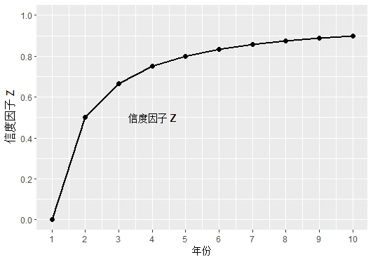
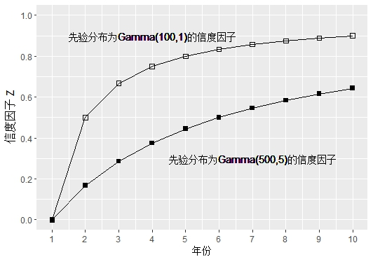

第3章 贝叶斯与信度
本章学习目标
- 理解条件概率、先验分布（prior distribution）、后验分布（pasterier distribution）的意义，并应用贝叶斯方法对后验分布的参数进行估计。
- 了解统计决策理论，能够在常见的损失函数下求解贝叶斯估计量。
- 掌握信度保费的概念，并描述信度因子的作用。
- 理解贝叶斯信度理论，能够应用贝叶斯方法求解信度保费。
- 认识Bühlmann信度模型和Bühlmann-Straub信度模型。
- 了解信度理论的经验贝叶斯方法，计算两类经验贝叶斯信度模型的信度保费。
3.1 贝叶斯统计基础
在经典统计学中，分布的参数$\theta$通常被认为是一个固定的常量（尽管未知），而这在某些情况下可能遇到困难。例如给定观察样本，计算得到参数$\theta$的一个95%置信区间为$[10.45, 13.26]$；但由于$\theta$并非随机变量，“该区间是否包含真实参数值”是一个确定性事件、无概率可言，诸如$\text{P}(10.45 < \theta <13.26)=0.95$的表述在数学上不成立。因此，对区间估计有效性的分析往往面临困难。
而贝叶斯理论是一种完全不同的统计方法：该方法将参数$\theta$视为随机变量，并假定其在参数空间上的取值规律服从某个概率分布（称为先验分布），贝叶斯统计学主要应用样本信息对先验分布进行修正，得到对参数取值规律的更准确描述（称为后验分布）。经典统计学的许多结果可以被包含在贝叶斯统计学之中，同时，区间估计和假设检验在贝叶斯框架下的解释也更清晰，贝叶斯方法具有非常丰富的内涵。
3.1.1 贝叶斯公式
首先介绍可数个事件情况下的贝叶斯公式。记事件$B_1,B_2 ,\cdots,B_k, \cdots$构成样本空间$S$的一个分割（完备事件组），即各$B_i$两两互不相交（互不相容），且并集为$S$。则对于任意事件$A,~\text{P}(A) \neq 0$，都有如下公式成立：
称为贝叶斯公式。其中，分母的拆解应用了全概率公式。
某商店的货源分别来自三家工厂：其中工厂1的份额为60{%}，工厂2的份额为30{%}，工厂3的份额为10{%}。若已知工厂1的次品率为10{%}，工厂2的次品率为5{%}，工厂3的次品率为15{%}，则当发现一个次品时，该次品来自工厂3的概率为多少？
记事件$A$表示“发现次品”，事件$B_i$表示该产品来自工厂$i$。
将数据代入贝叶斯公式，有：
虽然工厂3只供应10{%}的产品，但由于其次品率较高，商店所发现的次品有16.7{%}的概率来自工厂3。
# 工厂1份额60%，次品率10%；工厂2份额30%，次品率5%；工厂3份额10%，次品率15%
# 求发现次品时，该次品来自工厂3的概率
P_B <- c(0.6, 0.3, 0.1) # 各工厂份额（先验概率）
P_A_given_B <- c(0.10, 0.05, 0.15) # 各工厂次品率（条件概率）
P_A <- sum(P_A_given_B * P_B) # 全概率公式
P_B3_given_A <- P_A_given_B[3] * P_B[3] / P_A
P_B3_given_A # 结果为0.167##############################################################################
# 第3章 贝叶斯与信度
# 对应教材：section3.tex
# 内容：贝叶斯统计基础、贝叶斯估计、信度理论、贝叶斯信度、
# 经验贝叶斯信度（EBCT模型1、EBCT模型2）
##############################################################################
import numpy as np
import matplotlib.pyplot as plt
from scipy import stats
import warnings
warnings.filterwarnings('ignore')
plt.rcParams['font.sans-serif'] = ['SimHei', 'DejaVu Sans']
plt.rcParams['axes.unicode_minus'] = False
##############################################################################
# 3.1 贝叶斯公式与后验分布
##############################################################################
## 3.1.1 三家工厂次品问题（例3.1）
P_B = np.array([0.6, 0.3, 0.1])
P_A_given_B = np.array([0.10, 0.05, 0.15])
P_A = np.sum(P_A_given_B * P_B)
P_B3_given_A = P_A_given_B[2] * P_B[2] / P_A
print(f"例3.1: P(A)={P_A:.4f}, P(B3|A)={P_B3_given_A:.4f}")/* 3.1.1 三家工厂次品问题（例3.1） */
proc iml;
P_B = {0.6, 0.3, 0.1}; /* 各工厂份额 */
P_A_given_B = {0.10, 0.05, 0.15}; /* 各工厂次品率 */
P_A = sum(P_A_given_B # P_B); /* 全概率公式 */
P_B3_given_A = P_A_given_B[3] * P_B[3] / P_A;
print "例3.1: 三家工厂次品问题";
print "P(A) =" P_A;
print "P(B3|A) =" P_B3_given_A;
quit;某保险可能发生S、M或L三类索赔，各类索赔相互独立，且所占比例分别为80{%}、15{%}和5{%}。已知索赔金额$X$具有概率密度函数$f_X (x) = 2\theta ^2 / x^3,\ x > \theta$，三类索赔对应的参数为$\theta _S = 100,\ \theta _M = 1,000,\ \theta _L = 2,500$。假如某一索赔的金额为5000元，分别计算其属于S、M或L三种索赔的概率。
定义事件$B_S,\ B_M,\ B_L$分别表示索赔属于S、M或L，事件$A$表示索赔金额处于$(5000,5000+h)$，其中$h$表示一个微小的变化量。
给定参数$\theta$，事件$A$发生的概率为：
上述概率可用“概率密度函数值 $\times$ 区间宽度”近似估计，即$\text{P}(A|\theta) \approx \frac{2\theta ^2}{5000^3}h$。
将各类索赔对应的参数值代入，得到如下概率：
由题可知，各类索赔的（先验）概率分别为：
应用贝叶斯公式，可求得：
类似可求得：$\text{P}(B_M | A) = 0.3188, \text{P}(B_L | A) = 0.6642$。因此，该索赔属于S、M和L的后验概率分别为$1.7{%}$、$31.88{%}$、$66.42{%}$。
# 三类索赔占比80%、15%、5%，参数theta分别为100、1000、2500
# 索赔金额X的密度为f(x) = 2*theta^2/x^3, x > theta
# 求索赔金额为5000时，属于各类索赔的后验概率
theta <- c(100, 1000, 2500)
P_prior <- c(0.80, 0.15, 0.05)
x <- 5000
# P(A|B_i) ∝ f(x|theta_i) = 2*theta_i^2/x^3
P_A_given_B <- 2 * theta^2 / x^3
P_A <- sum(P_A_given_B * P_prior)
P_post <- P_A_given_B * P_prior / P_A
P_post # 后验概率：S=0.0170, M=0.3188, L=0.6642##############################################################################
# 第3章 贝叶斯与信度
# 对应教材：section3.tex
# 内容：贝叶斯统计基础、贝叶斯估计、信度理论、贝叶斯信度、
# 经验贝叶斯信度（EBCT模型1、EBCT模型2）
##############################################################################
import numpy as np
import matplotlib.pyplot as plt
from scipy import stats
import warnings
warnings.filterwarnings('ignore')
plt.rcParams['font.sans-serif'] = ['SimHei', 'DejaVu Sans']
plt.rcParams['axes.unicode_minus'] = False
##############################################################################
# 3.1 贝叶斯公式与后验分布
##############################################################################
## 3.1.2 S/M/L三类索赔（例3.2）
theta = np.array([100, 1000, 2500])
P_prior = np.array([0.80, 0.15, 0.05])
x = 5000
P_A_given_B = 2 * theta**2 / x**3
P_A = np.sum(P_A_given_B * P_prior)
P_post = P_A_given_B * P_prior / P_A
print(f"例3.2: 后验概率 S={P_post[0]:.4f}, M={P_post[1]:.4f}, L={P_post[2]:.4f}")/* 3.1.2 S/M/L三类索赔（例3.2） */
proc iml;
theta = {100, 1000, 2500};
P_prior = {0.80, 0.15, 0.05};
x = 5000;
P_A_given_B = 2 * theta##2 / x##3;
P_A = sum(P_A_given_B # P_prior);
P_post = P_A_given_B # P_prior / P_A;
print "例3.2: S/M/L三类索赔";
print "后验概率:" P_post;
quit;3.1.2 先验和后验分布
与第一章表述类似，假定$X$服从某种分布，具有离散型概率分布或连续型概率密度函数$f(x|\theta)$，其中$\theta$是分布中的未知参数。若已知$\{X_1, X_2, \dots, X_n\}$是来自该分布的一组简单随机样本，需要从数据中估计参数值$\hat{\theta}$。此处将总体分布记为$f(x|\theta)$，表示给定参数值等于$\theta$时的条件分布，更符合贝叶斯统计学的观点。
进行如下定义：若参数$\theta$为随机变量，在进行抽样得到数据观测值之前，根据历史数据或主观判断给出对$\theta$取值规律的分布描述，称为先验分布（prior distribution）。先验分布反映了研究者对总体参数取值的假设和经验认识。
记参数空间$\Theta$表示$\theta$的可行取值范围。在通常情况下，参数空间$\Theta$是实数轴上的某段区间，$\theta$为连续型随机变量，例如当$X$服从泊松分布时，泊松参数$\lambda$可以取区间$(0,+\infty)$上的任意值。记$f_{\Theta}(\theta)$表示先验概率密度函数，简记为$f(\theta)$，先验分布中的参数称为超参数（hyperparameter）。
1. 后验分布的计算
给定样本观测值${\boldsymbol{x}} = (x_1,x_2,\cdots,x_n)$，利用贝叶斯理论对参数$\theta$的分布规律进行修正，即可得到后验分布（posterior distribution）。此时可以将贝叶斯公式推广到连续场景，得到$\theta$的后验概率密度函数如下：
$f(\theta|{\boldsymbol{x}})$即为后验分布，表示参数$\theta$在给定样本${\boldsymbol{x}}$条件下的分布。后验分布是贝叶斯统计中对参数$\theta$进行推断的基础，上式中各符号的定义和解释如下：
- $f({\boldsymbol{x}}|\theta)=\prod_{i=1}^n f(x_i|\theta)$为样本分布（似然函数），反映了当参数值为$\theta$时，一次抽样得到观测值${\boldsymbol{x}}$的概率；
- $f({\boldsymbol{x}},\theta)$表示样本${\boldsymbol{x}}$与参数$\theta$的联合分布，根据定义，可以拆分为似然函数$f({\boldsymbol{x}}|\theta)$和先验分布$f(\theta)$的乘积；
- $f({\boldsymbol{x}}) = \int_{\Theta} f({\boldsymbol{x}}|\theta) f(\theta) \mathrm{d}\theta$为样本的边际分布，在先验分布的基础上对$\theta$求积分，将参数取值的随机性消除。
由于积分后$f({\boldsymbol{x}})$与参数$\theta$无关、是一个常数值，因此通常可用如下的正比公式来表示后验分布：
上式表明，后验概率密度函数正比于似然函数与先验分布的乘积。在计算时仅需关注$f({\boldsymbol{x}}|\theta)$和$f(\theta)$中与参数$\theta$有关的部分，称为分布的核；求得$f(\theta | {\boldsymbol{x}})$的核后，再补充常数使$\int_{\Theta} f(\theta | {\boldsymbol{x}}) \mathrm{d}\theta = 1$，保证其满足概率密度函数的性质即可。
对后验分布的计算方法进行总结，可归纳为如下步骤：
第一，确定参数$\theta$的先验分布$f(\theta)$；
第二，根据总体分布的形式，计算样本的似然函数$f({\boldsymbol{x}}|\theta)$；
第三，将似然函数与先验分布相乘，提取与参数$\theta$有关的部分，为后验分布的核；
第四，根据分布的核，识别具体的后验分布（及对应超参数）。
2. 共轭先验分布
给定似然函数$f({\boldsymbol{x}}|\theta)$，若后验分布$f(\theta|{\boldsymbol{x}})$与先验分布$f(\theta)$属于同一个分布族，则称此时的先验和后验为共轭分布，$f(\theta)$为关于该似然函数的共轭先验分布（conjugate prior distribution）。
在贝叶斯统计中，使用共轭先验分布通常可以极大简化后验分布的计算过程，由于后验分布与先验分布的形式相同，只需要根据抽样结果调整分布的超参数；同时，在后验分布与先验分布共轭的情况下，$\theta$的参数估计结果通常也具有较好的解释性。以下将通过例题进行说明。
设$X$服从成功概率为$\theta~(0<\theta<1)$的二项分布，且$\theta$的先验分布服从贝塔分布$\text{Be}(\alpha ,\beta)$。给定样本${\boldsymbol{x}}=(x_1,x_2,\cdots,x_n)$表示n次实验的结果（以0/1表示未成功或成功），确定后验分布的形式。
若$\theta$的先验服从贝塔分布，则其概率密度函数可表示为：
同时，似然函数的核为：
由于后验分布正比于似然函数与先验分布的乘积，故有：
观察可知，上式为贝塔分布$\text{Be}(\sum x_i + \alpha, n - \sum x_i + \beta)$的核。后验分布与先验分布属于同一分布族，故贝塔分布为二项分布中成功概率参数的共轭先验分布。
# X~Bin(n, theta)，theta~Beta(alpha, beta)
# 后验：Beta(sum(x) + alpha, n - sum(x) + beta)
alpha <- 2; beta <- 3
x <- c(1, 0, 1, 1, 0, 1, 1, 1, 0, 1) # 10次实验，7次成功
n <- length(x)
alpha_post <- sum(x) + alpha
beta_post <- n - sum(x) + beta
# 后验期望
E_theta_post <- alpha_post / (alpha_post + beta_post)
# 先验 vs 后验对比
E_prior <- alpha / (alpha + beta)
c(先验期望 = E_prior, 后验期望 = E_theta_post, 样本比例 = mean(x))
##############################################################################
# 3.2 共轭先验分布与后验分布计算
############################################################################################################################################################
# 第3章 贝叶斯与信度
# 对应教材：section3.tex
# 内容：贝叶斯统计基础、贝叶斯估计、信度理论、贝叶斯信度、
# 经验贝叶斯信度（EBCT模型1、EBCT模型2）
##############################################################################
import numpy as np
import matplotlib.pyplot as plt
from scipy import stats
import warnings
warnings.filterwarnings('ignore')
plt.rcParams['font.sans-serif'] = ['SimHei', 'DejaVu Sans']
plt.rcParams['axes.unicode_minus'] = False
##############################################################################
# 3.1 贝叶斯公式与后验分布
##############################################################################
## 3.1.3 二项分布/贝塔共轭先验（例3.3）
alpha = 2; beta = 3
x = np.array([1, 0, 1, 1, 0, 1, 1, 1, 0, 1])
n = len(x)
alpha_post = x.sum() + alpha
beta_post = n - x.sum() + beta
E_theta_post = alpha_post / (alpha_post + beta_post)
E_prior = alpha / (alpha + beta)
print(f"例3.3: 先验期望={E_prior:.4f}, 后验期望={E_theta_post:.4f}, 样本比例={x.mean():.4f}")
##############################################################################
# 3.2 共轭先验分布
##############################################################################/* 3.1.3 二项分布/贝塔共轭先验（例3.3） */
proc iml;
alpha = 2; beta = 3;
x = {1, 0, 1, 1, 0, 1, 1, 1, 0, 1};
n = nrow(x);
alpha_post = sum(x) + alpha;
beta_post = n - sum(x) + beta;
E_theta_post = alpha_post / (alpha_post + beta_post);
E_prior = alpha / (alpha + beta);
print "例3.3: 二项/贝塔共轭先验";
print "先验期望:" E_prior "后验期望:" E_theta_post "样本比例:" (sum(x)/n);
quit;
/****************************************************************************/某风险在一年内的索赔次数$X$服从参数为$\mu$的泊松分布，$\mu$的先验分布服从伽马分布$\text{Ga}(\alpha,\lambda )$。现有n年的索赔次数$x_{1},x_2,\cdots.x_{n}$，试证明伽马分布是泊松分布参数的共轭先验分布。
根据题目，可计算似然函数$f({\boldsymbol{x}}|\mu)$的核为：
已知$\mu \sim \text{Ga}(\alpha,\lambda)$，则先验分布的核为：
由于后验分布正比于似然函数与先验分布的乘积，故有：
观察可知，上式为伽马分布$\text{Ga}(\sum {x_i } + \alpha, n+\lambda)$的核。后验分布与先验分布属于同一分布族，故伽马分布为泊松分布参数的共轭先验分布。
# 假设索赔次数X~Poi(mu)，mu的先验为Ga(alpha, lambda)
# 样本x1,...,xn，后验为Ga(sum(x)+alpha, n+lambda)
alpha <- 100; lambda <- 1 # 先验参数
x <- c(144, 144, 174, 148, 151, 156, 168, 147, 140, 161) # 10年索赔次数
n <- length(x)
alpha_post <- sum(x) + alpha
lambda_post <- n + lambda
# 后验期望
E_mu_post <- alpha_post / lambda_post
E_mu_post##############################################################################
# 第3章 贝叶斯与信度
# 对应教材：section3.tex
# 内容：贝叶斯统计基础、贝叶斯估计、信度理论、贝叶斯信度、
# 经验贝叶斯信度（EBCT模型1、EBCT模型2）
##############################################################################
import numpy as np
import matplotlib.pyplot as plt
from scipy import stats
import warnings
warnings.filterwarnings('ignore')
plt.rcParams['font.sans-serif'] = ['SimHei', 'DejaVu Sans']
plt.rcParams['axes.unicode_minus'] = False
##############################################################################
# 3.1 贝叶斯公式与后验分布
##############################################################################
## 3.2.1 泊松/伽马共轭（例3.4）
alpha = 100; lam = 1
x = np.array([144, 144, 174, 148, 151, 156, 168, 147, 140, 161])
n = len(x)
alpha_post = x.sum() + alpha
lambda_post = n + lam
E_mu_post = alpha_post / lambda_post
print(f"\n例3.4: 泊松/伽马共轭后验期望 = {E_mu_post:.4f}")/* 3.2.1 泊松/伽马共轭（例3.4） */
proc iml;
alpha = 100; lambda = 1;
x = {144, 144, 174, 148, 151, 156, 168, 147, 140, 161};
n = nrow(x);
alpha_post = sum(x) + alpha;
lambda_post = n + lambda;
E_mu_post = alpha_post / lambda_post;
print "例3.4: 泊松/伽马共轭 后验期望 =" E_mu_post;
quit;假设一张保单每次索赔的金额$X$服从正态分布$\text{N}(\theta, \sigma_1^2)$，$\theta$的先验分布服从正态分布$\text{N}(\mu,\sigma^2_{2})$，其中$\mu,\sigma_1^2,\sigma_2^2$均为已知常数。现有过去$n$次损失金额的观测值${\boldsymbol{x}}=(x_1,x_2,\cdots,x_n)$，各次损失相互独立，请推导$\theta$的后验分布。
根据题目，可计算似然函数$f({\boldsymbol{x}}|\mu)$的核为：
其中，$n\bar{x} = \sum_{i=1}^{n}x_{i}$。
已知$\theta \sim \text{N}(\mu,\sigma_2^2)$，则先验分布的核为：
由于后验分布正比于似然函数与先验分布的乘积，故有：
故正态分布也是正态均值参数的共轭先验分布，同时，$\theta|{\boldsymbol{x}}$的后验期望可以表示成先验分布的均值$\mu$与样本均值$\bar{x}$的加权平均。
# X~N(theta, sigma1^2)，theta~N(mu, sigma2^2)
# 后验为N((sigma1^2*mu + n*sigma2^2*xbar)/(sigma1^2+n*sigma2^2), sigma1^2*sigma2^2/(sigma1^2+n*sigma2^2))
sigma1 <- 50; mu0 <- 300; sigma2 <- 20
n <- 10; xbar <- 270
mu_post <- (sigma1^2 * mu0 + n * sigma2^2 * xbar) / (sigma1^2 + n * sigma2^2)
sigma2_post <- sigma1^2 * sigma2^2 / (sigma1^2 + n * sigma2^2)
c(mu_post, sqrt(sigma2_post)) # 后验均值281.54，标准差12.40##############################################################################
# 第3章 贝叶斯与信度
# 对应教材：section3.tex
# 内容：贝叶斯统计基础、贝叶斯估计、信度理论、贝叶斯信度、
# 经验贝叶斯信度（EBCT模型1、EBCT模型2）
##############################################################################
import numpy as np
import matplotlib.pyplot as plt
from scipy import stats
import warnings
warnings.filterwarnings('ignore')
plt.rcParams['font.sans-serif'] = ['SimHei', 'DejaVu Sans']
plt.rcParams['axes.unicode_minus'] = False
##############################################################################
# 3.1 贝叶斯公式与后验分布
##############################################################################
## 3.2.2 正态/正态共轭（例3.5）
sigma1 = 50; mu0 = 300; sigma2 = 20
n = 10; xbar = 270
mu_post = (sigma1**2 * mu0 + n * sigma2**2 * xbar) / (sigma1**2 + n * sigma2**2)
sigma2_post = sigma1**2 * sigma2**2 / (sigma1**2 + n * sigma2**2)
print(f"例3.5: 正态/正态共轭 后验均值={mu_post:.2f}, 标准差={np.sqrt(sigma2_post):.2f}")/* 3.2.2 正态/正态共轭（例3.5） */
proc iml;
sigma1 = 50; mu0 = 300; sigma2 = 20;
n = 10; xbar = 270;
mu_post = (sigma1**2 * mu0 + n * sigma2**2 * xbar) /
(sigma1**2 + n * sigma2**2);
sigma2_post = sigma1**2 * sigma2**2 / (sigma1**2 + n * sigma2**2);
print "例3.5: 正态/正态共轭";
print "后验均值 =" mu_post "后验标准差 =" sqrt(sigma2_post);
quit;前表~列出了常见分布的共轭先验分布以及后验分布的计算结果。
| 分布名称 | 似然函数$f({}|\theta)$的核 | 先验分布$f(\theta)$ | 后验分布$f(\theta|{})$ |
|---|---|---|---|
| $\text{B}(n,\theta)$ | $\theta^{\sum\limits_{i=1}^n x_i} (1-\theta)^{n-\sum\limits_{i=1}^n x_i}$ | $\theta \sim \text{Be}(\alpha, \beta)$ | $\text{Be}(\sum\limits_{i=1}^nx_i + \alpha, n-\sum\limits_{i=1}^nx_i + \beta)$ |
| $\text{Poi}(\mu)$ | $\mu^{\sum\limits_{i=1}^n x_i} e^{-n\mu}$ | $\mu \sim \text{Ga}(\alpha, \lambda)$ | $\text{Ga}(\sum\limits_{i=1}^n x_i + \alpha, n + \lambda)$ |
| $\text{NB}(k,p)$ | $p^{nk}\left( {1 - p} \right)^{\sum\limits_{i=1}^n {x_i}}$ | $p \sim \text{Be}(\alpha, \beta)$ | $\text{Be}(nk+\alpha, \sum\limits_{i=1}^nx_i + \beta)$ |
| $\text{N}(\theta,\sigma_1^2)$ | $e^{-\frac{(n\theta^{2}-2n\bar{x}\theta)}{2\sigma_1^{2}}}$ | $\theta \sim \text{N}(\mu,\sigma_2^2)$ | $\text{N}(\frac{\sum\limits_{i=1}^n x_i / \sigma_1^2 + \mu/\sigma_2^2}{n/\sigma_1^2 + 1/\sigma_2^2}, \frac{1}{n/\sigma_1^2 + 1/\sigma_2^2})$ |
| $\text{Ga}(\alpha, \lambda)$ | $\lambda^{n\alpha} e^{-\lambda \sum\limits_{i=1}^n x_i}$ | $\lambda \sim \text{Ga}(\alpha',\lambda')$ | $\text{Ga}(n\alpha+\alpha', \sum\limits_{i=1}^n x_i + \lambda')$ |
| $\text{W}(c, \gamma)$ | $c^n e^{-c \sum\limits_{i=1}^n x_i^\gamma}$ | $c \sim \text{Ga}(\alpha,\lambda)$ | $\text{Ga}(n+\alpha, \sum\limits_{i=1}^n x_i^\gamma + \lambda)$ |
3.1.3 贝叶斯估计
为得到$\theta$的估计量，首先需要定义损失函数。损失函数度量了用样本函数$g({\boldsymbol{x}})$估计参数$\theta$时的误差。损失函数的取值非负：当不存在误差时，损失函数值为0；当误差较大时，损失函数值也应较大。
常见的损失函数包括二次损失函数（quadratic loss）、绝对损失函数（absolute error loss）和0/1损失函数（all-or-nothing loss）。三种损失函数的定义分别如下：
(1) 二次损失函数：
(2) 绝对损失函数：
(3) 0/1损失函数：
在求得参数$\theta$的后验分布后，贝叶斯估计量可通过最小化期望后验损失（expected posterior loss，简记为EPL）求得，定义为：
当使用二次损失、绝对损失和0/1损失函数时，贝叶斯估计分别对应参数后验分布的期望、中位数和众数，下面依次进行证明。
(1) 证明：将$g({\boldsymbol{x}})$简记为$g$，使用二次损失函数代入期望后验损失，得到：$\text{EPL} =\int {[g({\boldsymbol{x}}) - \theta ]^2f(\theta |{\boldsymbol{x}}) \mathrm{d}\theta}$。将该式关于$g$求导并令其等于0，结果为：
注意到$\int {f(\theta |{\boldsymbol{x}})\mathrm{d}\theta } = 1$，则有：
即取$g$为后验分布的期望时，期望后验损失达到最低。 $\square$
(2) 证明：将$g({\boldsymbol{x}})$简记为$g$，使用绝对损失函数代入期望后验损失，得到：$\text{EPL} =\int {|g({\boldsymbol{x}}) - \theta| f(\theta |{\boldsymbol{x}}) \mathrm{d}\theta}$。
不妨设参数$\theta$的取值范围是$(-\infty , \infty)$，则上式变为：
将上式关于$g$求导并令其等于0，结果为：
解得$F_{\theta|{\boldsymbol{x}}}(g)=0.5$，即取$g$为后验分布的中位数时，期望后验损失达到最低。 $\square$
(3) 证明：由于损失函数不连续，故无法通过求导计算使期望后验损失达到最小的$g$。考虑到：
因此，对较小的$\varepsilon$，当$\varepsilon \to 0$时期望后验损失可表示为：
当$f(g|{\boldsymbol{x}})$达到最大值、即取$g$为后验分布的众数时，期望后验损失达到最低。 $\square$
在前例~中，计算二次损失函数下$\theta$的贝叶斯估计。
已知$\theta$的后验分布为参数$(\sum x_i +\alpha, n - \sum x_i + \beta)$的贝塔分布，在二次损失函数下，$\theta$的贝叶斯估计量是后验分布的期望，即：
# 已知theta的后验分布为Be(sum(x)+alpha, n-sum(x)+beta)
# 二次损失函数下，贝叶斯估计为后验期望
alpha <- 2; beta <- 3
sum_x <- 7; n <- 10
theta_hat <- (sum_x + alpha) / (n + alpha + beta)
theta_hat # 二次损失下的贝叶斯估计
##############################################################################
# 3.3 贝叶斯估计（不同损失函数）
############################################################################################################################################################
# 第3章 贝叶斯与信度
# 对应教材：section3.tex
# 内容：贝叶斯统计基础、贝叶斯估计、信度理论、贝叶斯信度、
# 经验贝叶斯信度（EBCT模型1、EBCT模型2）
##############################################################################
import numpy as np
import matplotlib.pyplot as plt
from scipy import stats
import warnings
warnings.filterwarnings('ignore')
plt.rcParams['font.sans-serif'] = ['SimHei', 'DejaVu Sans']
plt.rcParams['axes.unicode_minus'] = False
##############################################################################
# 3.1 贝叶斯公式与后验分布
##############################################################################
## 3.2.3 贝塔后验的二次损失贝叶斯估计（例3.6）
alpha = 2; beta = 3
sum_x = 7; n = 10
theta_hat = (sum_x + alpha) / (n + alpha + beta)
print(f"例3.6: 二次损失贝叶斯估计 theta_hat = {theta_hat:.4f}")
##############################################################################
# 3.3 贝叶斯估计（不同损失函数）
##############################################################################/* 3.2.3 贝塔后验的二次损失贝叶斯估计（例3.6） */
proc iml;
alpha = 2; beta = 3;
sum_x = 7; n = 10;
theta_hat = (sum_x + alpha) / (n + alpha + beta);
print "例3.6: 二次损失贝叶斯估计 theta_hat =" theta_hat;
quit;
/****************************************************************************/在前例~中，设先验分布的超参数为$(\alpha =2,\lambda =5)$。已知前8年的平均索赔次数为$\bar{x}=0.625$，计算在三种损失函数下$\mu$的贝叶斯估计。
已知$\mu$的后验分布为$\text{Ga}(n \bar{x} + \alpha, n + \lambda) = \text{Ga}(7, 13)$ 。
(1) 当使用二次损失函数时，贝叶斯估计量是后验分布的期望，即$\hat{\mu}_1 = 7/13$。
(2) 当使用绝对损失函数时，贝叶斯估计量是后验分布的中位数，即求$a$使积分等式$\int_0^a \frac{13^7}{6!}x^{6} e^{-13x} \mathrm{d}x = 0.5$成立。
在R中调用命令“qgamma(0.5,shape=7,rate=13)”，可解得$\hat{\mu}_2 \approx0.513$。
(3) 当使用0/1损失函数时，贝叶斯估计量是后验分布的众数，即$\hat{\mu}_3 = (7-1)/13$。
# 后验分布为Ga(7, 13)
# (1) 二次损失：后验期望 = 7/13
mu_hat1 <- 7 / 13
# (2) 绝对损失：后验中位数
mu_hat2 <- qgamma(0.5, shape = 7, rate = 13)
# (3) 0/1损失：后验众数 = (7-1)/13
mu_hat3 <- (7 - 1) / 13
c(mu_hat1, mu_hat2, mu_hat3) # 0.538, 0.513, 0.462
##############################################################################
# 3.4 信度保费与信度因子
############################################################################################################################################################
# 第3章 贝叶斯与信度
# 对应教材：section3.tex
# 内容：贝叶斯统计基础、贝叶斯估计、信度理论、贝叶斯信度、
# 经验贝叶斯信度（EBCT模型1、EBCT模型2）
##############################################################################
import numpy as np
import matplotlib.pyplot as plt
from scipy import stats
import warnings
warnings.filterwarnings('ignore')
plt.rcParams['font.sans-serif'] = ['SimHei', 'DejaVu Sans']
plt.rcParams['axes.unicode_minus'] = False
##############################################################################
# 3.1 贝叶斯公式与后验分布
##############################################################################
## 3.3.1 三种损失函数下的贝叶斯估计（例3.7）
mu_hat1 = 7 / 13 # 二次损失
mu_hat2 = stats.gamma.ppf(0.5, 7, scale=1/13) # 绝对损失
mu_hat3 = (7 - 1) / 13 # 0/1损失
print(f"\n例3.7: 二次损失={mu_hat1:.4f}, 绝对损失={mu_hat2:.4f}, 0/1损失={mu_hat3:.4f}")
##############################################################################
# 3.4 信度保费与信度因子
##############################################################################/* 3.3.1 三种损失函数下的贝叶斯估计（例3.7） */
proc iml;
/* 后验分布Ga(7, 13) */
mu_hat1 = 7 / 13; /* 二次损失：后验期望 */
mu_hat2 = quantile('GAMMA', 0.5, 7, 1/13); /* 绝对损失：后验中位数 */
mu_hat3 = (7 - 1) / 13; /* 0/1损失：后验众数 */
print "例3.7: 贝叶斯估计（不同损失函数）";
print "二次损失(后验期望):" mu_hat1;
print "绝对损失(后验中位数):" mu_hat2;
print "0/1损失(后验众数):" mu_hat3;
quit;
/****************************************************************************/3.2 信度理论
经验费率是指基于被保险人的理赔历史和损失经验来调整保费的方法，通过考虑个体风险的差异，使保险费率更具针对性。经验费率通常是将手册费率与个体经验数据进行加权，其中经验数据的权重称为信度因子，反映了被保险人自身经验的可信度。本节将主要介绍计算信度因子的贝叶斯方法和经验贝叶斯方法。
3.2.1 信度保费和信度因子
首先通过一个简单的例子来了解信度保费公式。假设小镇A有一个地方公司长期运营一支由10辆巴士组成的车队，该公司计划为这支车队投保，以防范因发生事故而引起的索赔。保险公司需要计算该车队的纯保费，即未来一年索赔的期望成本。
根据过去五年的数据，这支车队每年的平均损失为1600英镑。此外，保险公司观察英国其他地区的车队数据，得知每辆巴士每年的平均索赔金额为250英镑（即10辆巴士每年的平均索赔金额为2500英镑）。由于两个数据的来源和样本大小不同，并且车队的运营环境存在差异（例如城市与农村），这些条件都将显著影响索赔的情况。
保险公司在计算下一年的保费时，可以考虑两种极端情况：其一，选择1600英镑作为保费，因为2500英镑的样本与投保车队的相关性较低；其二，选择2500英镑作为保费，因为该数据来自更大范围的观察样本，结论更加稳定可靠。而信度理论则是将个体经验与整体信息相结合，对两个极端情况的保费取加权平均，得到信度保费$Z \times 1600 + (1 - Z) \times 2500$。其中，$Z$的取值范围在$[0,1]$之间。例如取$Z=0.6$，计算的信度保费等于1960英镑。
下面引入正式的表述。保险公司希望估计某一风险在未来一年的索赔情况（包括索赔次数或索赔金额），记$\bar{X}$表示基于该风险自身经验计算的未来一年索赔情况的估计值，$\mu$表示根据行业、公司所观察的其他相似风险数据得到的先验估计值，则信度保费公式可以表示为：
其中，$Z~(0 \leq Z \leq 1)$称为信度因子。信度保费公式易于应用和解释，信度因子$Z$为权重，表示当使用$\bar{X}$作为未来一年索赔情况的估计值时，经验数据相对先验数据的“可信”程度。$Z$越大，$\bar{X}$的可信程度越高，当$Z=1$时信度保费完全由经验数据决定。
例如，若保险公司获取了投保车队过去十年的数据，发现该车队的年均损失仍为1600英镑。此时经验数据（即1600英镑）的可信程度将提高，如将信度因子$Z$的值增大为0.7，得到新的信度保费估计值为1825英镑。
同时，若保险公司获取的经验数据仍为五年，但先验数据（即2500英镑）来自伦敦或格拉斯哥等大都市的车队。此时先验数据与投保车队风险的相关性较低，经验数据的重要性增加，信度因子也将增大。反之若该数据来自与小镇A环境相似的其他几个小镇，且样本量更大，此时先验数据的相关度和重要性增加，信度因子应相应降低。
根据上述例子，可以从直观上理解信度因子的性质：风险自身的经验数据越多，则$Z$越大；先验数据的相关程度越高（即与目标风险的条件越相似），则$Z$越小；反之亦然。注意，尽管信度因子反映了该风险可用的经验数据量的大小，但因子自身的取值并不依赖于$\bar{X}$的大小。
一个统计学家希望用贝叶斯估计求指数分布$f(x) = \frac{1}{\mu }e^{- x/\mu}$的均值。其中参数$\mu$为随机变量，先验分布服从逆伽马分布：
该分布的期望具有显示表达式，为：$\theta/(\alpha-1)$。
(1) 写出 $\mu$的后验分布，并证明平方损失函数下的贝叶斯估计结果为：
(2) 将上述结果写成信度估计的形式，同时给出信度因子的计算公式。
(3) 已知先验分布的超参数为 $\theta=40$ 和 $\alpha=1.5$，样本统计量$\sum_{i=1}^{100} {x_i} = 9826$，求参数$\mu$的后验期望与信度因子的估计结果。
(1) 由题意，似然函数可表示为
由于$\mu$的后验分布正比于似然函数与先验分布的乘积，故有：
上式恰为逆伽马分布的核，且$\theta^{*} = \sum {x_i} + \theta$，$\alpha^{*} = n +\alpha$。代入逆伽马分布的期望公式，可以求得后验分布的期望为：
该结果即为平方损失函数下参数$\mu$的贝叶斯估计量。
(2) 将$\mathbb{E}(\mu|{\boldsymbol{x}})$拆分为两部分，可得：
即$\hat{\mu}$可以写成样本均值$\sum{x_i}/{n}$和先验分布期望$\theta/(\alpha - 1)$的加权平均值。信度因子为样本均值的权重，计算公式为：$Z = n/(n + \alpha - 1)$。
(3) 将数据代入问题(2)的结果，可得$\mu$的后验期望估计值为：
信度因子为:
由于样本量$n$远大于超参数$\alpha$，故信度因子$Z$的值接近于1，$\mu$的后验期望估计值（信度保费）接近于样本均值98.26，先验分布的均值对估计结果的影响较小。
# X~Exp(1/mu)，mu~InvGamma(alpha, theta)
# theta=40, alpha=1.5, sum(x)=9826, n=100
theta <- 40; alpha <- 1.5
sum_x <- 9826; n <- 100
# 后验期望
mu_hat <- (sum_x + theta) / (n + alpha - 1)
# 信度因子
Z <- n / (n + alpha - 1)
c(mu_hat, Z) # 98.1692, 0.9950
##############################################################################
# 3.5 贝叶斯信度模型
############################################################################################################################################################
# 第3章 贝叶斯与信度
# 对应教材：section3.tex
# 内容：贝叶斯统计基础、贝叶斯估计、信度理论、贝叶斯信度、
# 经验贝叶斯信度（EBCT模型1、EBCT模型2）
##############################################################################
import numpy as np
import matplotlib.pyplot as plt
from scipy import stats
import warnings
warnings.filterwarnings('ignore')
plt.rcParams['font.sans-serif'] = ['SimHei', 'DejaVu Sans']
plt.rcParams['axes.unicode_minus'] = False
##############################################################################
# 3.1 贝叶斯公式与后验分布
##############################################################################
## 3.4.2 逆伽马先验下的信度估计（例3.8）
theta_ig = 40; alpha_ig = 1.5; sum_x = 9826; n = 100
mu_hat = (sum_x + theta_ig) / (n + alpha_ig - 1)
Z = n / (n + alpha_ig - 1)
print(f"例3.8: mu_hat={mu_hat:.4f}, Z={Z:.4f}")
##############################################################################
# 3.5 贝叶斯信度模型
##############################################################################/* 3.4.2 逆伽马先验下的信度估计（例3.8） */
proc iml;
theta = 40; alpha = 1.5; sum_x = 9826; n = 100;
mu_hat = (sum_x + theta) / (n + alpha - 1);
Z = n / (n + alpha - 1);
print "例3.8: 逆伽马先验 mu_hat =" mu_hat "Z =" Z;
quit;
/****************************************************************************/3.2.2 贝叶斯信度
本节主要介绍基于贝叶斯方法的三种信度模型：泊松/伽马模型，伯努利/贝塔模型和正态/正态模型。
1. 泊松/伽马模型
若保险公司需要估计某个风险未来索赔次数的期望值，问题概括如下：
- 记随机变量$X$表示该风险在未来一年内的索赔次数，$X$的分布依赖于固定但未知的参数$\Lambda$；
- 给定$\Lambda =\lambda$时，$X$的条件分布服从参数为$\lambda$的泊松分布；
- $\Lambda$是一个随机变量，先验分布为形状参数等于$\alpha$、速率参数等于$\beta$的伽马分布；
- 现有${\boldsymbol{x}} = (x_1,x_2,\cdots,x_n)$，即$X$在过去$n$年（$n$期）的经验数据。
问题目标是在给定经验数据${\boldsymbol{x}}$的情况下，对索赔次数的期望值$\Lambda$进行估计。一般采用二次损失（平方损失）函数，即估计$\Lambda$的后验期望$\mathbb{E}(\Lambda|{\boldsymbol{x}})$。根据前例~的结果，可知此时$\Lambda$的后验分布为$\text{Ga}(\sum\limits_{i=1}^n x_i + \alpha, n+\beta)$，后验期望等于：
注意到索赔次数经验值的期望为$\bar{x}=\sum\limits_{i=1}^n x_i/n$，先验信息的期望索赔次数是伽马分布$\text{Ga}(\alpha,\beta)$的均值$\alpha/\beta$，则上式也可写为如下形式：
其中，信度因子$Z = n/(n+\beta)$。该公式即为泊松/伽马模型下的信度保费和信度因子。
泊松/伽马模型的信度保费具有十分直观的解释。当风险本身缺少经验数据（即$n = 0$）时，信度因子$Z = 0$，此时可用于估计索赔次数的信息仅有其先验分布，$\Lambda$的估计值将等于先验分布的均值$\alpha/\beta$。反之，当不考虑先验分布的信息时，可用于估计$\Lambda$的数据仅有风险本身的经验观测值，估计结果等于$\bar{x}=\sum\limits_{i=1}^n x_i/n$，该结果等价于经典统计学中的极大似然估计。
当同时考虑两类信息时，信度因子$Z$反映了两类信息对$\Lambda$的估计的可信度，其取值由经验数据的样本量$n$和先验分布的超参数$\beta$同时决定。当样本量$n$增加时，经验数据较充足、结果较稳定，故使用$\bar{x}$估计$\Lambda$的可信度增加；类似地，超参数$\beta$反映了先验分布的波动程度（$\text{Var}(\Lambda) = \mathbb{E}(\Lambda)/\beta$），当$\beta$增大时，先验分布的波动减小、可信度增加，故先验信息的权重$(1-Z)$增加。
给定某保单组合在十年期间的经验索赔次数如下表：
| 年度 | 1 | 2 | 3 | 4 | 5 | 6 | 7 | 8 | 9 | 10 |
|---|---|---|---|---|---|---|---|---|---|---|
| 索赔次数 | 144 | 144 | 174 | 148 | 151 | 156 | 168 | 147 | 140 | 161 |
保险公司认为，该组合的索赔次数服从参数为$\Lambda$的泊松分布，$\Lambda$的取值未知，但先验分布为$\text{Ga}(100,1)$，即先验分布的期望和方差均为100。
在实务中，保险公司逐步观察得到该组合在每一年度的索赔经验，并应用信度理论对期望索赔次数进行更新：即当计算第1年的保费时，没有任何经验数据；计算第2年保费时，有第1年的经验数据；依次类推……则根据泊松/伽马模型的结果，可以绘制信度因子$Z$和期望索赔次数估计值$\mathbb{E}(\Lambda|{\boldsymbol{x}})$的变化趋势，如前图。

对于下一年度的期望索赔次数估计值，观察经验数据可知，该保单组合实际的年均索赔次数约为150次，与$\Lambda$的先验估计$\mathbb{E}(\Lambda)=100$存在较大差异，先验信息不准确。而在考虑经验数据后，$\Lambda$的后验估计$\mathbb{E}(\Lambda|{\boldsymbol{x}})$在第8年左右逐渐接近真实的索赔次数水平，这是由于信度因子增大、风险自身的经验数据在估计结果中的权重不断增加，对期望索赔次数进行了修正。
若假设$\Lambda$的先验分布为$\text{Ga}(500, 5)$，则先验分布的期望仍为100、方差变为20，相对更为稳定。同样绘制信度因子$Z$和期望索赔次数估计值$\mathbb{E}(\Lambda|{\boldsymbol{x}})$的变化趋势，结果如前图。

# 保单组合10年索赔次数数据
x <- c(144, 144, 174, 148, 151, 156, 168, 147, 140, 161)
n <- length(x)
## 先验分布Ga(100, 1)
alpha1 <- 100; beta1 <- 1
Z1 <- numeric(n)
E_mu1 <- numeric(n)
for (k in 1:n) {
Z1[k] <- k / (k + beta1)
E_mu1[k] <- (sum(x[1:k]) + alpha1) / (k + beta1)
}
## 先验分布Ga(500, 5)
alpha2 <- 500; beta2 <- 5
Z2 <- numeric(n)
E_mu2 <- numeric(n)
for (k in 1:n) {
Z2[k] <- k / (k + beta2)
E_mu2[k] <- (sum(x[1:k]) + alpha2) / (k + beta2)
}
## 绘图：信度因子变化趋势
par(mfrow = c(1, 2))
plot(1:n, Z1, type = 'b', pch = 19, col = 'red',
xlab = '年度', ylab = '信度因子 Z', main = 'Ga(100,1)',
ylim = c(0, 1))
plot(1:n, Z2, type = 'b', pch = 19, col = 'blue',
xlab = '年度', ylab = '信度因子 Z', main = 'Ga(500,5)',
ylim = c(0, 1))
## 绘图：期望索赔次数估计值变化趋势
par(mfrow = c(1, 2))
plot(1:n, E_mu1, type = 'b', pch = 19, col = 'red',
xlab = '年度', ylab = 'E(Lambda|x)', main = 'Ga(100,1)',
ylim = c(100, 175))
abline(h = mean(x), lty = 2, col = 'black')
plot(1:n, E_mu2, type = 'b', pch = 19, col = 'blue',
xlab = '年度', ylab = 'E(Lambda|x)', main = 'Ga(500,5)',
ylim = c(100, 175))
abline(h = mean(x), lty = 2, col = 'black')##############################################################################
# 第3章 贝叶斯与信度
# 对应教材：section3.tex
# 内容：贝叶斯统计基础、贝叶斯估计、信度理论、贝叶斯信度、
# 经验贝叶斯信度（EBCT模型1、EBCT模型2）
##############################################################################
import numpy as np
import matplotlib.pyplot as plt
from scipy import stats
import warnings
warnings.filterwarnings('ignore')
plt.rcParams['font.sans-serif'] = ['SimHei', 'DejaVu Sans']
plt.rcParams['axes.unicode_minus'] = False
##############################################################################
# 3.1 贝叶斯公式与后验分布
##############################################################################
## 3.5.1 泊松/伽马模型：信度因子随时间变化（例3.9）
x = np.array([144, 144, 174, 148, 151, 156, 168, 147, 140, 161])
n = len(x)
# 先验Ga(100, 1)
alpha1, beta1 = 100, 1
Z1 = np.zeros(n); E_mu1 = np.zeros(n)
for k in range(n):
Z1[k] = (k+1) / (k+1 + beta1)
E_mu1[k] = (x[:k+1].sum() + alpha1) / (k+1 + beta1)
# 先验Ga(500, 5)
alpha2, beta2 = 500, 5
Z2 = np.zeros(n); E_mu2 = np.zeros(n)
for k in range(n):
Z2[k] = (k+1) / (k+1 + beta2)
E_mu2[k] = (x[:k+1].sum() + alpha2) / (k+1 + beta2)
print(f"\n例3.9: Ga(100,1)最终Z={Z1[-1]:.4f}, 最终E={E_mu1[-1]:.2f}")
print(f" Ga(500,5)最终Z={Z2[-1]:.4f}, 最终E={E_mu2[-1]:.2f}")
fig, axes = plt.subplots(2, 2, figsize=(14, 10))
axes[0,0].plot(range(1, n+1), Z1, 'ro-', label='Ga(100,1)')
axes[0,0].set_title('信度因子 Z'); axes[0,0].legend()
axes[0,1].plot(range(1, n+1), Z2, 'bo-', label='Ga(500,5)')
axes[0,1].set_title('信度因子 Z'); axes[0,1].legend()
axes[1,0].plot(range(1, n+1), E_mu1, 'ro-')
axes[1,0].axhline(y=x.mean(), ls='--', color='black')
axes[1,0].set_title('E(λ|x) - Ga(100,1)')
axes[1,1].plot(range(1, n+1), E_mu2, 'bo-')
axes[1,1].axhline(y=x.mean(), ls='--', color='black')
axes[1,1].set_title('E(λ|x) - Ga(500,5)')
plt.tight_layout(); plt.show()/* 3.5.1 泊松/伽马模型：信度因子随时间变化（例3.9） */
proc iml;
x = {144, 144, 174, 148, 151, 156, 168, 147, 140, 161};
n = nrow(x);
/* 先验Ga(100, 1) */
alpha1 = 100; beta1 = 1;
Z1 = j(n, 1, 0); E_mu1 = j(n, 1, 0);
do k = 1 to n;
Z1[k] = k / (k + beta1);
E_mu1[k] = (sum(x[1:k]) + alpha1) / (k + beta1);
end;
/* 先验Ga(500, 5) */
alpha2 = 500; beta2 = 5;
Z2 = j(n, 1, 0); E_mu2 = j(n, 1, 0);
do k = 1 to n;
Z2[k] = k / (k + beta2);
E_mu2[k] = (sum(x[1:k]) + alpha2) / (k + beta2);
end;
years = (1:n)`;
print "例3.9: 信度因子变化";
print "Ga(100,1)" years Z1 E_mu1;
print "Ga(500,5)" years Z2 E_mu2;
quit;2. 伯努利/贝塔模型
接下来介绍另一个相似的模型：伯努利/贝塔模型。记 $X$ 表示某个风险在未来一年是否会发生索赔，问题概括如下：
- $X$服从参数为$p$的伯努利分布，参数$p$固定但未知；
- $p$是一个随机变量，先验分布为贝塔分布$\text{Be}(a,b)$；
- 现有过去$n$年的经验数据${\boldsymbol{x}}=(x_1,x_2,\cdots,x_n)$。
问题目标是在给定经验数据${\boldsymbol{x}}$的情况下，对索赔概率的期望值$p$进行估计。根据前例~的结果，可知此时$p$的后验分布为$\text{Be}(a^{*} = \sum\limits_{i=1}^n x_i + a,~b^{*} = n - \sum\limits_{i=1}^n x_i + b)$，当采用二次损失函数时，$p$的后验期望估计值为$\mathbb{E}(p|{\boldsymbol{x}})=a^{*}/(a^{*} + b^{*})$。
设$(x_{1},x_{2},\cdots,x_{n})$是一组来自伯努利分布$\text{P}(X_{i} = 1) = p$的独立观测值，参数$p$的先验分布为贝塔分布$\text{Be}(a,b)$。
(1) 求参数$p$的后验分布；
(2) 确定参数$p$在平方损失函数下的贝叶斯估计结果，并将其表示为信度估计的形式，说明信度因子$Z$。
(1) 由前例~可知，$p$的后验服从参数$a^{*} = \sum\limits_{i=1}^n x_i + a,~b^{*} = n - \sum\limits_{i=1}^n x_i + b$的贝塔分布。
(2) 在平方损失函数下，$p$的贝叶斯估计为后验分布的期望，即：
注意到经验值的期望为样本均值$\bar{x} = \sum\limits_{i=1}^{n} x_i /n$，先验的期望值为$\mu = a/(a+b)$，则上式也可写为：
其中，信度因子$Z = n/(n+a+b)$。
# X~Bernoulli(p)，p~Beta(a, b)
# 后验为Beta(sum(x)+a, n-sum(x)+b)
# 信度因子Z = n/(n+a+b)
a <- 2; b <- 3
x <- c(1, 0, 1, 1, 0, 1, 1, 1, 0, 1)
n <- length(x)
a_post <- sum(x) + a
b_post <- n - sum(x) + b
E_p_post <- a_post / (a_post + b_post)
Z <- n / (n + a + b)
c(E_p_post, Z)##############################################################################
# 第3章 贝叶斯与信度
# 对应教材：section3.tex
# 内容：贝叶斯统计基础、贝叶斯估计、信度理论、贝叶斯信度、
# 经验贝叶斯信度（EBCT模型1、EBCT模型2）
##############################################################################
import numpy as np
import matplotlib.pyplot as plt
from scipy import stats
import warnings
warnings.filterwarnings('ignore')
plt.rcParams['font.sans-serif'] = ['SimHei', 'DejaVu Sans']
plt.rcParams['axes.unicode_minus'] = False
##############################################################################
# 3.1 贝叶斯公式与后验分布
##############################################################################
## 3.5.2 伯努利/贝塔模型（例3.10）
a = 2; b = 3
x = np.array([1, 0, 1, 1, 0, 1, 1, 1, 0, 1])
n = len(x)
a_post = x.sum() + a
b_post = n - x.sum() + b
E_p_post = a_post / (a_post + b_post)
Z = n / (n + a + b)
print(f"\n例3.10: 后验期望={E_p_post:.4f}, 信度因子Z={Z:.4f}")/* 3.5.2 伯努利/贝塔模型（例3.10） */
proc iml;
a = 2; b = 3;
x = {1, 0, 1, 1, 0, 1, 1, 1, 0, 1};
n = nrow(x);
a_post = sum(x) + a;
b_post = n - sum(x) + b;
E_p_post = a_post / (a_post + b_post);
Z = n / (n + a + b);
print "例3.10: 伯努利/贝塔模型";
print "后验期望:" E_p_post "信度因子Z:" Z;
quit;3. 正态/正态模型
对于累积索赔金额，可以考虑正态/正态模型。记$X$表示某个风险在未来一年的累积索赔金额，问题概括如下：
- $X$ 的分布依赖于固定但未知的参数$\Theta$；
- 给定$\Theta=\theta$时，$X$的条件分布服从正态分布$\text{N}(\theta,\sigma _1^2)$，其中$\sigma_1^2$已知；
- $\Theta$是一个随机变量，先验分布为正态分布$\text{N}(\mu,\sigma _2^2)$，其中$\mu,\sigma_2^2$已知；
- 现有过去$n$年的经验数据${\boldsymbol{x}}=(x_1,x_2,\cdots,x_n)$。
问题目标是在给定经验数据${\boldsymbol{x}}$的情况下，对纯保费（累积索赔金额的期望）$\Theta$进行估计。根据前例~的结果，可知此时$\Theta$的后验分布为：
当采用二次损失函数时，$\Theta$的后验期望估计值为：
即可以写成信度保费形式，信度因子$Z=n/(n+\sigma_1^2/\sigma_2^2)$。$Z$的取值在$[0,1]$之间，并且是关于经验数据量$n$以及先验分布标准差$\sigma_2$的增函数，完全符合信度因子的性质。
接下来对模型进行拓展。假定保险公司的目标仍然是估计未来的累积索赔金额，记$X_1,X_2,\cdots,X_n,X_{n+1},\cdots$表示不同年份的累积索赔金额，问题概括如下：
- 各$X_{j}$的分布依赖于固定但未知的参数$\Theta$，给定$\Theta=\theta$时，$X_j$的条件分布为正态分布$\text{N}(\theta,\sigma_1^2)$；
- 给定$\Theta=\theta$时，各$X_{j}$之间相互独立；
- $\Theta$的先验分布为正态分布$\text{N}(\mu,\sigma _2^2)$，其中$\mu,\sigma_2^2$已知；
- 假定随机变量$X_1,X_2,\cdots,X_n$的观测值（即前$n$年的索赔经验）已知，需要估计$X_{n+1}$（即下一年的累积索赔金额）的期望值。
与前述模型的区别在于，此时每年的索赔金额不再是同一个随机变量在不同年份的观测值，而是来自一组不同的随机变量$\{X_{j}\}_{j=1}^{\infty}$。此时，各年度的累积索赔金额$X_j$具有如下性质：
(1) 给定$\Theta=\theta$时，$\{X_{j}\}_{j=1}^{\infty}$为独立同分布（条件独立同分布）的随机变量；
(2) 各$X_{j}$同分布；
(3) 在无条件情况下，各$X_{j}$之间并不独立。
其中，性质(1)可由问题假设直接得出。对于性质(2)，注意到$X_j$的无条件分布可由如下公式表示：
即各$X_j$都具有相同的分布函数。
对于性质(3)，应用重期望公式并注意到$X_{j}, X_{k}~(j \neq k)$的条件独立性，有：
再次应用重期望公式，易知$\mathbb{E}(X_j) = \mathbb{E}(X_k) = \mu,~\mathbb{E}(X_{j} X_{k}) \neq \mathbb{E}(X_j) \mathbb{E}(X_k)$，故随机变量$X_{j}, X_{k}$并非无条件独立。
在该模型下，第$n+1$年的贝叶斯保费估计为：
结果与前述问题相同。
假设某风险组合的年度累积索赔金额$X$服从正态分布，均值为$\mu$、标准差为50。根据过去的经验，保险公司认为$\mu$的先验分布服从均值为300、标准差为20的正态分布。
(1) 计算期望累积索赔金额$\mu$小于270的先验概率。
(2) 现有10年的累积索赔金额观测数据，平均值为270。
(a) 确定$\mu$的后验分布。
(b) 计算$\mu$小于270的后验概率，并与(1)的结果进行比较。
(1) 期望累积索赔金额$\mu$小于270的先验概率为：
其中，$\Phi(z)$为标准正态分布的分布函数。
(2) (a) 由前例~的结果可知，在正态/正态模型下，$\mu$的后验分布为：
其中，$\sigma_1=50,\ \mu_0=300,\ \sigma_2=20,\ n=10,\ \bar{x}=270$。
代入得到后验分布的期望为，
后验分布的方差为：
故$\mu$的后验分布为$N(281.54, 12.40^2)$
(b) 题目所求的后验概率为：
后验概率大于先验概率，这是由于样本观测值$\bar{x}=270$，较$\mu$的先验均值更小，样本数据对先验信息进行了修正。
# X~N(theta, sigma1^2)，theta~N(mu, sigma2^2)
# 信度因子Z = n*sigma2^2/(sigma1^2+n*sigma2^2) = n/(n+sigma1^2/sigma2^2)
sigma1 <- 50; mu0 <- 300; sigma2 <- 20
n <- 10; xbar <- 270
## (1) 先验概率P(mu < 270)
P_prior <- pnorm(270, mean = mu0, sd = sigma2)
P_prior # 0.06681
## (2) 后验分布
mu_post <- (sigma1^2 * mu0 + n * sigma2^2 * xbar) / (sigma1^2 + n * sigma2^2)
sigma2_post <- sigma1^2 * sigma2^2 / (sigma1^2 + n * sigma2^2)
sigma_post <- sqrt(sigma2_post)
## 后验概率P(mu < 270 | x)
P_post <- pnorm(270, mean = mu_post, sd = sigma_post)
P_post # 后验概率大于先验概率
## 信度因子
Z <- n * sigma2^2 / (sigma1^2 + n * sigma2^2)
Z##############################################################################
# 第3章 贝叶斯与信度
# 对应教材：section3.tex
# 内容：贝叶斯统计基础、贝叶斯估计、信度理论、贝叶斯信度、
# 经验贝叶斯信度（EBCT模型1、EBCT模型2）
##############################################################################
import numpy as np
import matplotlib.pyplot as plt
from scipy import stats
import warnings
warnings.filterwarnings('ignore')
plt.rcParams['font.sans-serif'] = ['SimHei', 'DejaVu Sans']
plt.rcParams['axes.unicode_minus'] = False
##############################################################################
# 3.1 贝叶斯公式与后验分布
##############################################################################
## 3.5.3 正态/正态模型（例3.11）
sigma1 = 50; mu0 = 300; sigma2 = 20
n = 10; xbar = 270
# (1) 先验概率P(mu < 270)
P_prior = stats.norm.cdf(270, mu0, sigma2)
print(f"\n例3.11: 先验概率 P(mu<270) = {P_prior:.5f}")
# (2) 后验分布
mu_post = (sigma1**2 * mu0 + n * sigma2**2 * xbar) / (sigma1**2 + n * sigma2**2)
sigma2_post = sigma1**2 * sigma2**2 / (sigma1**2 + n * sigma2**2)
sigma_post = np.sqrt(sigma2_post)
# 后验概率P(mu < 270 | x)
P_post = stats.norm.cdf(270, mu_post, sigma_post)
print(f" 后验概率 P(mu<270|x) = {P_post:.4f}")
# 信度因子
Z = n * sigma2**2 / (sigma1**2 + n * sigma2**2)
print(f" 信度因子 Z = {Z:.4f}")/* 3.5.3 正态/正态模型（例3.11） */
proc iml;
sigma1 = 50; mu0 = 300; sigma2 = 20;
n = 10; xbar = 270;
/* 先验概率P(mu < 270) */
P_prior = cdf('NORMAL', 270, mu0, sigma2);
print "例3.11: 先验概率 P(mu<270) =" P_prior;
/* 后验分布 */
mu_post = (sigma1**2 * mu0 + n * sigma2**2 * xbar) /
(sigma1**2 + n * sigma2**2);
sigma2_post = sigma1**2 * sigma2**2 / (sigma1**2 + n * sigma2**2);
sigma_post = sqrt(sigma2_post);
/* 后验概率P(mu < 270 | x) */
P_post = cdf('NORMAL', 270, mu_post, sigma_post);
print "后验概率 P(mu<270|x) =" P_post;
/* 信度因子 */
Z = n * sigma2**2 / (sigma1**2 + n * sigma2**2);
print "信度因子 Z =" Z;
quit;本节主要介绍了贝叶斯信度理论的泊松/伽马模型、伯努利/贝塔模型和正态/正态模型，三种模型的框架基本相似，主要区别在于目标变量的分布假设以及参数先验分布的选择。在解题时，首先应根据研究对象是索赔次数还是索赔金额，选择能够恰当描述随机变量特性的分布假设；在此基础上，根据给定的先验信息，结合经验数据推导参数的后验分布和贝叶斯估计，并将估计量通过信度估计的形式来表示，即可得到信度因子和信度保费的计算公式。读者可尝试应用前表，对更多模型假设下的索赔估计结果进行推导。
然而，贝叶斯信度在实践中也具有一定的不足。首先，贝叶斯估计的合理性存在争议，特别是关于先验分布的选择以及先验超参数赋值的问题。例如，在泊松/伽马模型中，信度因子的计算涉及先验分布的超参数$\beta$，目前通常是根据研究者对先验信息的主观信念进行赋值（$\beta$越大，对先验信息的信任程度越高），但这一过程缺乏统一标准。其次，贝叶斯估计量在某些情况下可能也无法写成信度估计的形式，例如在索赔次数的泊松模型中使用均匀分布作为先验（无信息先验）。
3.3 经验贝叶斯信度
经验贝叶斯信度（empirical bayes credibility theory，EBCT）是对贝叶斯信度理论的推广，由此衍生出了许多计算短期保险合同信度保费的方法。本节主要介绍其中两个基础模型，即EBCT模型1和EBCT模型2。
3.3.1 EBCT模型1：Bühlmann信度
首先介绍EBCT模型1。尽管在实践中并不常用，该模型能够很好解释经验贝叶斯信度理论的基本原理，以及经验贝叶斯信度与传统贝叶斯信度的异同。
EBCT模型1的目标仍然是对某个风险未来的索赔频率或（累积）索赔金额进行估计。记$X_1,X_2,\cdots,X_n,X_{n+1},\cdots$表示不同年份的索赔次数或索赔金额，研究问题可以表示为：已知过去$n$年的索赔数据${\boldsymbol{x}} = (x_1,x_2,\cdots,x_n)$，需要估计$X_{n+1}$的期望。
EBCT模型1的假设如下：
- 各$X_j$的分布依赖于固定但未知的参数$\theta$；
- 给定$\theta$条件下，$\{X_j\}_{j=1}^{\infty}$为独立同分布的随机变量；
- 各$X_j$同分布；
- 在无条件情况下，各$X_j$之间并不一定独立。
该假设曾经在正态/正态模型的拓展中被提及。此处称$\theta$为风险参数，通常为一个（或一组）常数；定义$m(\theta)$和$s^2(\theta)$表示$X_j$的条件期望和条件方差，即：
注意，各$X_j$在给定$\theta$的条件下为同分布，故$m(\theta)$和$s^{2}(\theta)$都与$j$无关；由于$\theta$是随机变量， $m(\theta)$和$s^{2}(\theta)$也为随机变量。$m(\theta)$即为要估计的目标。
EBCT模型1与正态/正态模型的相同点在于，两个模型都通过参数$\theta$来控制随机变量的分布，且都假定$\{X_j\}_{j=1}^{\infty}$为条件独立同分布，在无条件下同分布、但不一定独立。而不同之处在于：
(1) 在正态/正态模型中，给定$\theta$条件下，$X_j$的分布具有明确的形式为正态分布$\text{N}(\theta,\sigma_1^2)$，且$\theta$的先验也服从正态分布$\text{N}(\mu,\sigma_2^2)$；而EBCT模型1没有对随机变量及其参数先验分布的假设。
(2) 在正态/正态模型中，$X_j$的期望和方差分别为$\theta$和常数$\sigma_1^2$；而EBCT模型1允许$X_j$的期望（即估计目标）是关于$\theta$的更一般的函数$m(\theta)$，方差也是关于$\theta$的函数$s^2(\theta)$；
(3) 正态/正态模型中的风险参数$\theta$对于所有$X_j$通常是一个相同的数值，但在EBCT模型1中可以是一组不同的量。
给定经验数据${\boldsymbol{x}}$，EBCT模型1对$m(\theta)$的估计结果（信度保费）可表示为：
其中，$\bar{X} =\sum\limits_{j = 1}^n X_{j} /n$，信度因子的计算公式为：
信度保费的推导细节超出了本书范围，此处不做介绍。
上式给出了$m(\theta)$的信度估计公式，其中$\bar{X}$仍然表示经验信息，$\mathbb{E}[m(\theta)]$表示先验信息给出的索赔期望。上述结果与正态/正态模型十分相似，特别是在信度因子的计算公式方面，$\mathbb{E}[s^2(\theta)]$和$\text{Var}[m(\theta)]$分别替代了$\sigma_1^2$和$\sigma_2^2$，含义也较为类似。
对于EBCT模型1，信度保费的计算需要用到三个信息：$\mathbb{E}[m(\theta)]$、$\mathbb{E}[s^{2}(\theta)]$和$\text{Var}[m(\theta)]$，主要涉及随机变量的一阶矩和二阶矩。这也是经验贝叶斯信度与传统贝叶斯信度的重要区别，即首先需要从数据中估计先验分布，计算相对复杂，但避免了主观指定先验分布带来的偏差。
本节将在更一般的情况下讨论具体估计问题，并假设现实中存在一些与原始风险相似（但不完全相同）的其他风险数据，共同构成了一个风险集合。假定风险集合中存在$N$个不同的风险，保险公司感兴趣的目标不妨设为其中第1个风险个体。定义$X_{ij}~(i=1,\cdots,N;~j=1,\cdots, n)$表示第$i$个风险在第$j$年的索赔情况，原始数据的结构可由下表给出：
| 风险个体 | 年度数据 | |||
|---|---|---|---|---|
| 1 | 2 | $\cdots$ | n | |
| 1 | $X_{11}$ | $X_{12}$ | $\cdots$ | $X_{1n}$ |
| 2 | $X_{21}$ | $X_{22}$ | $\cdots$ | $X_{2n}$ |
| $\vdots$ | $\vdots$ | $\vdots$ | $\ddots$ | $\vdots$ |
| N | $X_{N1}$ | $X_{N2}$ | $\cdots$ | $X_{Nn}$ |
前表~中的每行代表不同风险的观测值，例如第一行代表第1个风险个体，注意前述问题中的$X_{1},X_{2},\cdots,X_{n}$在此处表示为$X_{11},X_{12},\cdots,X_{1n}$。
对集合中的每一个风险$i~(i=1,2,\cdots,N)$，模型假设：
- 各$X_{ij}~(j=1,2,\cdots,n)$的分布依赖于固定但未知的参数$\theta_i$；
- 给定$\theta_i$条件下，$\{{X_{ij}}\}_{j=1}^n$为独立同分布的随机变量。
注意，此处假设不同风险可以具有不同的风险参数值。对于各风险之间的关系，模型假设$(\theta_i, x_{ij})$与$(\theta_k, x_{km})$独立同分布（其中$i \neq k,~1 \leq j,m \leq n$），由此可以导出如下两个结论：
- 对$i \neq k$，$X_{ij}$与$X_{km}$独立同分布；
- 风险参数$\theta_1,\theta_2,\cdots,\theta_N$独立同分布。
在$\theta_1,\theta_2,\cdots,\theta_N$为同分布的假设下，保险公司即可借助$\theta_2,\cdots,\theta_N$得到$\theta_i$（以及研究目标$\theta_1$）的分布规律。
类似定义$m(\theta _{i}) = \mathbb{E}(X_{ij}|\theta _{i}),~s^{2}(\theta _{i}) = \text{Var}(X_{ij}|\theta _{i})$，注意此处的$m(\theta_i)$和$s^{2}(\theta _{i})$仍然与$j$无关。同时，由于$\theta_1,\theta_2,\cdots,\theta_N$具有相同分布，则$\mathbb{E}[m(\theta_i)]$、$\mathbb{E}[s^{2}(\theta_i)]$和$\text{Var}[m(\theta_i)]$也与$i$无关。
进一步引入如下符号定义：
则根据上两式，可以得到目标风险个体1在未来一年索赔情况的信度估计结果为：
其中，$\mathbb{E}[m(\theta)]$、$\mathbb{E}[s^{2}(\theta)]$和$\text{Var}[m(\theta)]$的无偏估计量分别由下式给出：
无偏估计的推导过程略，感兴趣的读者可自行证明。
需要注意的一点是，理论上$\text{Var}[m(\theta)]$为非负，但上式在某些情况下计算的估计量可能产生负值。因此，严格来讲$\text{Var}[m(\theta)]$的估计结果应为上式与0中的较大值，此时的估计量将为有偏估计，但可以保证估计值具有实际意义。
本例也可以帮助更好理解EBCT模型1的信度保费计算公式：其中，$\mathbb{E}[s^2(\theta)]$可解释为风险个体自身索赔的波动性水平（即每行方差的平均值），而$\text{Var}[m(\theta)]$可解释为不同风险的索赔情况之间的变异性（即每行均值的方差）。观察信度因子的计算公式可知，$Z$满足如下性质：
(1) $Z$的取值在0到1之间；
(2) $Z$是关于$n$的增函数，即获取越多关于风险的经验数据，经验数据在估计未来索赔时的可信度越高；
(3) $Z$是关于$\mathbb{E}[s^{2}(\theta)]$的减函数，可以理解为当$\text{Var}[m(\theta)]$固定时，若$\mathbb{E}[s^{2}(\theta)]$的值越大，则各风险自身的变异性较大，经验数据的可靠性相对较低；
(4) $Z$是关于$\text{Var}[m(\theta)]$的增函数，可以理解为当$\mathbb{E}[s^{2}(\theta)]$固定时，若$\text{Var}[m(\theta)]$的值越大，则各风险之间的相关程度较低、风险集合的变异性较大，先验信息（平行数据信息）对信度保费估计结果的影响也相对较低。
这些性质都与信度理论的思想相吻合。然而，与3.2节的介绍不同，传统模型的信度因子与风险自身的损失经验无关，而EBCT模型1在计算信度因子$Z$时使用了经验数据的观测结果。尽管$\mathbb{E}[s^{2}(\theta)]$和$\text{Var}[m(\theta)]$在理论上与经验数据无关，但由于EBCT模型并未指定参数$\theta_i$的先验分布，这些信息需要利用风险自身以及其他相似风险的损失经验进行估计。
最后说明的是，EBCT模型1的假设可以进一步放宽。若$X_{ij}$来自相同风险$i$，则在给定$\theta_i$条件下，显然可以得到独立同分布的假设，以及$m(\theta_i),s^2(\theta_i)$与$j$无关。事实上，使用下面的弱化假设仍然可以得到相同的信度估计，且这些假设可以将EBCT模型1与EBCT模型2相联系：
- 对于每一风险$i$，$X_{ij}$在给定$\theta_i$的条件下相互独立；
- 对$i \neq k$，$(\theta_i,X_{ij})$与$(\theta_k,X_{km})$相互独立，且风险参数$\theta_1,\theta_2,\cdots,\theta_N$同分布；
- 对于每一风险$i$，$\mathbb{E}(X_{ij}|\theta_i)$和$\text{Var}(X_{ij}|\theta_i)$都与$j$无关。
下表统计了某国际保险公司在不同国家销售的火灾保单5年间的索赔金额（单位：万美元）。补充缺失项，并在EBCT模型1的假设下估计$\mathbb{E}[m(\theta)]$，计算每个国家下一年度的EBCT保费。
| 年度1 | 年度2 | 年度3 | 年度4 | 年度5 | $\bar{X}_i$ | $\frac{1}{4}\sum\limits_{j=1}^5 (X_{ij}-\bar{X}_i)^2$ | |
|---|---|---|---|---|---|---|---|
| 国家1 | 48 | 53 | 42 | 50 | 59 | 50.4 | 39.3 |
| 国家2 | 64 | 71 | 64 | 73 | 70 | 68.4 | 17.3 |
| 国家3 | 85 | 54 | 76 | 65 | 90 | 74.0 | 215.5 |
| 国家4 | 44 | 52 | 69 | 55 | 71 |
本例共有4个风险个体（国家）在5年期间的观测值。
$\bar {X}_i$是第$i$个风险在五年内的平均索赔金额，所以缺失项为：
$\mathbb{E}[m(\theta)]$的估计值为$\bar{X}$，即:
将数据代入上两式，可类似求出：$\text{Var}[m(\theta)] \approx 90.33,~\mathbb{E}[s^2(\theta)] = 101.2$。因此，可计算信度因子$Z$等于：
应用公式$P = Z\bar {X}_i +(1 - Z)\mathbb{E}[m(\theta)]$，同时注意到每个国家的信度因子和$\mathbb{E}[m(\theta)]$均相同，可计算得到信度保费分别为：
# 四个国家5年火灾保单索赔金额（万美元）
Y <- matrix(c(
48, 53, 42, 50, 59,
64, 71, 64, 73, 70,
85, 54, 76, 65, 90,
44, 52, 69, 55, 71
), nrow = 4, byrow = TRUE)
N <- nrow(Y); n <- ncol(Y)
X_bar_i <- rowMeans(Y)
X_bar <- mean(Y)
# 补充缺失项
s2_i <- apply(Y, 1, function(row) sum((row - mean(row))^2) / (n - 1))
E_m <- X_bar
E_s2 <- mean(s2_i)
Var_m <- var(X_bar_i) - E_s2 / n
Z <- n / (n + E_s2 / Var_m)
credibility_premium <- Z * X_bar_i + (1 - Z) * E_m
list(E_m = E_m, E_s2 = E_s2, Var_m = Var_m, Z = Z,
X_bar_i = X_bar_i, s2_i = s2_i, premium = credibility_premium)
##############################################################################
# 3.6 经验贝叶斯信度：EBCT模型1（Bühlmann信度）
############################################################################################################################################################
# 第3章 贝叶斯与信度
# 对应教材：section3.tex
# 内容：贝叶斯统计基础、贝叶斯估计、信度理论、贝叶斯信度、
# 经验贝叶斯信度（EBCT模型1、EBCT模型2）
##############################################################################
import numpy as np
import matplotlib.pyplot as plt
from scipy import stats
import warnings
warnings.filterwarnings('ignore')
plt.rcParams['font.sans-serif'] = ['SimHei', 'DejaVu Sans']
plt.rcParams['axes.unicode_minus'] = False
##############################################################################
# 3.1 贝叶斯公式与后验分布
##############################################################################
## 3.5.4 EBCT模型1示例：四个国家火灾保单（例3.12）
Y = np.array([
[48, 53, 42, 50, 59],
[64, 71, 64, 73, 70],
[85, 54, 76, 65, 90],
[44, 52, 69, 55, 71]
])
N, n = Y.shape
X_bar_i = Y.mean(axis=1)
X_bar = Y.mean()
# 补充缺失项
s2_i = np.var(Y, axis=1, ddof=1)
E_m = X_bar
E_s2 = np.mean(s2_i)
Var_m = np.var(X_bar_i, ddof=1) - E_s2 / n
Z = n / (n + E_s2 / Var_m)
credibility_premium = Z * X_bar_i + (1 - Z) * E_m
print(f"\n例3.12: E[m]={E_m:.2f}, E[s²]={E_s2:.2f}, Var[m]={Var_m:.2f}, Z={Z:.4f}")
print(f" 信度保费: {credibility_premium}")
##############################################################################
# 3.6 EBCT模型1（Bühlmann信度）
##############################################################################/* 3.5.4 EBCT模型1示例：四个国家火灾保单（例3.12） */
proc iml;
Y = {48 53 42 50 59,
64 71 64 73 70,
85 54 76 65 90,
44 52 69 55 71};
N = nrow(Y); n = ncol(Y);
X_bar_i = Y[, :]; /* 行均值 */
X_bar = mean(Y); /* 总体均值 */
E_m = X_bar;
/* 各行样本方差 */
s2_i = j(N, 1, 0);
do i = 1 to N;
s2_i[i] = var(Y[i, ]);
end;
E_s2 = mean(s2_i);
Var_m = var(X_bar_i) - E_s2 / n;
Z = n / (n + E_s2 / Var_m);
credibility_premium = Z * X_bar_i + (1 - Z) * E_m;
print "例3.12: 四个国家EBCT1";
print "E[m(theta)] =" E_m;
print "E[s^2(theta)] =" E_s2;
print "Var[m(theta)] =" Var_m;
print "Z =" Z;
print "信度保费:" credibility_premium;
quit;
/****************************************************************************/下表展示了五个车队（A-E）在6年期间（2015-2020）的总索赔金额$X_{ij}$，使用EBCT1模型计算五个车队下一年度的信度保费。
| 2015 | 2016 | 2017 | 2018 | 2019 | 2020 | |
|---|---|---|---|---|---|---|
| 车队A | 1250 | 980 | 1800 | 2040 | 1000 | 1180 |
| 车队B | 1700 | 3080 | 1700 | 2820 | 5760 | 3480 |
| 车队C | 2050 | 3560 | 2800 | 1600 | 4200 | 2650 |
| 车队D | 4690 | 4370 | 4800 | 9070 | 3770 | 5250 |
| 车队E | 7150 | 3480 | 5010 | 4810 | 8740 | 7260 |
根据上表数据，可以计算以下结果：
| 车队$i$ | $\bar{X}_i = \sum\limits_{j = 1}^6 X_{ij}/n $ | $\sum\limits_{j = 1}^6 {(X_{ij} - \bar{X}_i)^2}$ | $(\bar{X}_i - \bar{X})^2$ |
|---|---|---|---|
| A | 1375 | 973150 | 5569600 |
| B | 3090 | 11218200 | 416025 |
| C | 2810 | 4562000 | 855625 |
| D | 5325 | 18039550 | 2528100 |
| E | 6075 | 19130550 | 5475600 |
| 总计 | 18675 | 53923450 | 14844950 |
代入上式至()，可得如下结果：
根据上述结果，计算得到信度因子等于：
对于车队A，即表中的第1个风险个体，信度保费计算如下：
车队B-E的信度保费可用同样的方法计算：
| 车队 | B | C | D | E |
|---|---|---|---|---|
| 信度保费 | 3152 | 2900 | 5171 | 5848 |
# 五个车队，6年的索赔金额数据
# 数据矩阵：每行一个车队，每列一年
Y <- matrix(c(
1250, 980, 1800, 2040, 1000, 1180, # 车队A
1700, 3080, 1700, 2820, 5760, 3480, # 车队B
2050, 3560, 2800, 1600, 4200, 2650, # 车队C
4690, 4370, 4800, 9070, 3770, 5250, # 车队D
7150, 3480, 5010, 4810, 8740, 7260 # 车队E
), nrow = 5, byrow = TRUE)
N <- nrow(Y) # 风险数量
n <- ncol(Y) # 年数
## 计算每个车队的均值
X_bar_i <- rowMeans(Y)
X_bar <- mean(Y) # 总体均值
## E[m(theta)] = X_bar
E_m <- X_bar
## E[s^2(theta)] = (1/N) * sum_i (1/(n-1)) * sum_j (X_ij - X_bar_i)^2
E_s2 <- mean(apply(Y, 1, function(row) var(row) * (n-1) / (n-1)))
# 等价写法
E_s2 <- mean(apply(Y, 1, var))
## Var[m(theta)] = (1/(N-1)) * sum_i (X_bar_i - X_bar)^2 - E[s^2(theta)]/n
Var_m <- var(X_bar_i) * (N-1) / (N-1) - E_s2 / n
# 注意：var()在R中计算样本方差（除以n-1）
Var_m <- var(X_bar_i) - E_s2 / n
## 信度因子
Z <- n / (n + E_s2 / Var_m)
Z
## 各车队的信度保费
credibility_premium <- Z * X_bar_i + (1 - Z) * E_m
credibility_premium
##############################################################################
# 3.7 经验贝叶斯信度：EBCT模型2（Bühlmann-Straub信度）
############################################################################################################################################################
# 第3章 贝叶斯与信度
# 对应教材：section3.tex
# 内容：贝叶斯统计基础、贝叶斯估计、信度理论、贝叶斯信度、
# 经验贝叶斯信度（EBCT模型1、EBCT模型2）
##############################################################################
import numpy as np
import matplotlib.pyplot as plt
from scipy import stats
import warnings
warnings.filterwarnings('ignore')
plt.rcParams['font.sans-serif'] = ['SimHei', 'DejaVu Sans']
plt.rcParams['axes.unicode_minus'] = False
##############################################################################
# 3.1 贝叶斯公式与后验分布
##############################################################################
## 3.6.1 EBCT模型1示例：五个车队（例3.13）
Y = np.array([
[1250, 980, 1800, 2040, 1000, 1180],
[1700, 3080, 1700, 2820, 5760, 3480],
[2050, 3560, 2800, 1600, 4200, 2650],
[4690, 4370, 4800, 9070, 3770, 5250],
[7150, 3480, 5010, 4810, 8740, 7260]
])
N, n = Y.shape
X_bar_i = Y.mean(axis=1)
X_bar = Y.mean()
E_m = X_bar
E_s2 = np.mean(np.var(Y, axis=1, ddof=1))
Var_m = np.var(X_bar_i, ddof=1) - E_s2 / n
Z = n / (n + E_s2 / Var_m)
credibility_premium = Z * X_bar_i + (1 - Z) * E_m
print(f"\n例3.13: EBCT模型1")
print(f" E[m(θ)] = {E_m:.2f}")
print(f" E[s²(θ)] = {E_s2:.2f}")
print(f" Var[m(θ)] = {Var_m:.2f}")
print(f" Z = {Z:.4f}")
print(f" 信度保费: {credibility_premium}")
##############################################################################
# 3.7 EBCT模型2（Bühlmann-Straub信度）
##############################################################################/* 3.6.1 EBCT模型1示例：五个车队（例3.13） */
proc iml;
Y = {1250 980 1800 2040 1000 1180,
1700 3080 1700 2820 5760 3480,
2050 3560 2800 1600 4200 2650,
4690 4370 4800 9070 3770 5250,
7150 3480 5010 4810 8740 7260};
N = nrow(Y); n = ncol(Y);
X_bar_i = Y[, :]; /* 行均值 */
X_bar = mean(Y); /* 总体均值 */
E_m = X_bar;
/* 各行样本方差 */
E_s2 = j(N, 1, 0);
do i = 1 to N;
E_s2[i] = var(Y[i, ]);
end;
E_s2 = mean(E_s2);
Var_m = var(X_bar_i) - E_s2 / n;
Z = n / (n + E_s2 / Var_m);
credibility_premium = Z * X_bar_i + (1 - Z) * E_m;
print "例3.13: EBCT模型1（Bühlmann信度）";
print "E[m(theta)] =" E_m;
print "E[s^2(theta)] =" E_s2;
print "Var[m(theta)] =" Var_m;
print "Z =" Z;
print "信度保费:" credibility_premium;
quit;
/****************************************************************************/3.3.2 EBCT模型2：Bühlmann-Straub信度
EBCT模型1要求各风险的经验期相当，每期的风险单位数相等并且保持不变，该假设较为苛刻，在实践中应用困难。本节将经验贝叶斯信度理论推广到第二个更复杂的模型，称为EBCT模型2。
记$Y_1,Y_2,\cdots,Y_n,Y_{n+1},\cdots$表示某风险在不同年份的索赔情况，现已知过去$n$年的索赔数据${{\boldsymbol{y}}}=(y_1,y_2,\cdots,y_n)$，需要估计$Y_{n+1}$的后验期望。
EBCT模型1和EBCT模型2的区别在于模型2中包含了额外风险参数$P_{j}$，代表第$j$年的风险单位数，例如第$j$年的风险保额或保单数量；在EBCT模型2中，每期的风险单位数可以不相等。随机变量$Y_{j}$表示第$j$年的索赔次数或累积索赔金额，为消除不同年份业务水平的影响，定义$X_{j}=Y_j/P_j~(j = 1,2,\cdots)$表示每一风险单位的平均索赔。注意在估计$Y_{n+1}$的期望时，通常假设年初的风险单位数$P_{n+1}$是已知的。
EBCT模型2包含如下假设：
- 各$X_{j}$的分布依赖于固定但未知的参数$\theta$；
- 给定$\theta$条件下，各$X_j$相互独立（但不一定同分布）；
- $\mathbb{E}(X_j|\theta)$与$j$无关；
- $P_j \cdot \text{Var}(X_j|\theta)$与$j$无关。
其中，第一点是所有贝叶斯信度模型的标准假设，$\theta$同样代表风险参数。第二点是EBCT模型1假设的弱化版本，该模型只要求各$X_j$条件独立、不要求同分布，在某些情况下甚至不需要条件独立的要求。将上述假设与EBCT模型1进行对比，可以发现当所有的风险单位数$P_j = 1$时，该模型等价于EBCT模型1。对于后两点假设，可以考虑如下例子。
假设一个风险集合在不同年度具有不同保单，第$j$年的保单数为常数$P_j$；当年度每张保单的索赔额记为$W_{j,k}$，各保单的索赔额相互独立且具有相同的均值$m(\theta)$和方差$s^2(\theta)$，与$j$无关。记$Y_j$表示第$j$年所有有效保单的总索赔，$X_{j}=Y_j/P_j$，则：
即本例满足模型的第三和第四点假设。
# 索赔金额Y_ij和风险单位数P_ij
Y <- matrix(c(
1250, 980, 1800, 2040, 1000, 1180,
1700, 3080, 1700, 2820, 5760, 3480,
2050, 3560, 2800, 1600, 4200, 2650,
4690, 4370, 4800, 9070, 3770, 5250,
7150, 3480, 5010, 4810, 8740, 7260
), nrow = 5, byrow = TRUE)
P <- matrix(c(
5, 5, 4, 6, 5, 5,
11, 13, 10, 12, 15, 14,
3, 4, 4, 3, 3, 2,
9, 9, 8, 8, 9, 10,
7, 7, 8, 8, 9, 10
), nrow = 5, byrow = TRUE)
N <- nrow(Y) # 风险数量
n <- ncol(Y) # 年数
## 计算X_ij = Y_ij / P_ij
X <- Y / P
## 每个风险的总风险单位数 P_bar_i
P_bar_i <- rowSums(P)
P_bar <- sum(P) # 总风险单位数
## 每个风险的加权均值 X_bar_i = sum_j P_ij * X_ij / P_bar_i
X_bar_i <- rowSums(P * X) / P_bar_i
## 总体加权均值 X_bar = sum_ij P_ij * X_ij / P_bar
X_bar <- sum(P * X) / P_bar
## E[m(theta)] = X_bar
E_m <- X_bar
## E[s^2(theta)] = (1/N) * sum_i (1/(n-1)) * sum_j P_ij * (X_ij - X_bar_i)^2
E_s2 <- sum(rowSums(P * (X - X_bar_i)^2)) / (N * (n - 1))
## P* = (1/(N*n-1)) * sum_i P_bar_i * (1 - P_bar_i/P_bar)
P_star <- sum(P_bar_i * (1 - P_bar_i / P_bar)) / (N * n - 1)
## Var[m(theta)] = (1/P*) * [(1/(N*n-1)) * sum_ij P_ij*(X_ij-X_bar)^2 - E[s^2(theta)]]
Var_m <- (sum(P * (X - X_bar)^2) / (N * n - 1) - E_s2) / P_star
## 各风险的信度因子 Z_i = P_bar_i / (P_bar_i + E[s^2]/Var[m])
Z_i <- P_bar_i / (P_bar_i + E_s2 / Var_m)
Z_i
## 各风险的单位风险信度保费
credibility_premium_unit <- Z_i * X_bar_i + (1 - Z_i) * E_m
credibility_premium_unit
## 乘以2021年风险单位数得到各车队下一年度信度保费
P_2021 <- c(5, 14, 2, 10, 10) # 假设的下年风险单位数
credibility_premium <- credibility_premium_unit * P_2021
credibility_premium##############################################################################
# 第3章 贝叶斯与信度
# 对应教材：section3.tex
# 内容：贝叶斯统计基础、贝叶斯估计、信度理论、贝叶斯信度、
# 经验贝叶斯信度（EBCT模型1、EBCT模型2）
##############################################################################
import numpy as np
import matplotlib.pyplot as plt
from scipy import stats
import warnings
warnings.filterwarnings('ignore')
plt.rcParams['font.sans-serif'] = ['SimHei', 'DejaVu Sans']
plt.rcParams['axes.unicode_minus'] = False
##############################################################################
# 3.1 贝叶斯公式与后验分布
##############################################################################
## 3.7.1 EBCT模型2示例：五个车队（例3.14）
P = np.array([
[5, 5, 4, 6, 5, 5],
[11, 13, 10, 12, 15, 14],
[3, 4, 4, 3, 3, 2],
[9, 9, 8, 8, 9, 10],
[7, 7, 8, 8, 9, 10]
])
X = Y / P
P_bar_i = P.sum(axis=1)
P_bar = P.sum()
X_bar_i = (P * X).sum(axis=1) / P_bar_i
X_bar = (P * X).sum() / P_bar
E_m = X_bar
E_s2 = np.sum(P * (X - X_bar_i[:, None])**2) / (N * (n - 1))
P_star = np.sum(P_bar_i * (1 - P_bar_i / P_bar)) / (N * n - 1)
Var_m = (np.sum(P * (X - X_bar)**2) / (N * n - 1) - E_s2) / P_star
Z_i = P_bar_i / (P_bar_i + E_s2 / Var_m)
premium_unit = Z_i * X_bar_i + (1 - Z_i) * E_m
P_2021 = np.array([5, 14, 2, 10, 10])
credibility_premium = premium_unit * P_2021
print(f"\n例3.14: EBCT模型2")
print(f" E[m(θ)] = {E_m:.4f}")
print(f" E[s²(θ)] = {E_s2:.4f}")
print(f" Var[m(θ)] = {Var_m:.4f}")
print(f" Z_i = {Z_i}")
print(f" 2021年信度保费: {credibility_premium}")/* 3.7.1 EBCT模型2示例：五个车队（例3.14） */
proc iml;
Y = {1250 980 1800 2040 1000 1180,
1700 3080 1700 2820 5760 3480,
2050 3560 2800 1600 4200 2650,
4690 4370 4800 9070 3770 5250,
7150 3480 5010 4810 8740 7260};
P = {5 5 4 6 5 5,
11 13 10 12 15 14,
3 4 4 3 3 2,
9 9 8 8 9 10,
7 7 8 8 9 10};
N = nrow(Y); n = ncol(Y);
X = Y / P;
P_bar_i = P[, +];
P_bar = sum(P);
X_bar_i = (P # X)[, +] / P_bar_i;
X_bar = sum(P # X) / P_bar;
E_m = X_bar;
E_s2 = sum((P # (X - X_bar_i)##2)[, +]) / (N * (n - 1));
P_star = sum(P_bar_i # (1 - P_bar_i / P_bar)) / (N * n - 1);
Var_m = (sum((P # (X - X_bar)##2)[, +]) / (N * n - 1) - E_s2) / P_star;
Z_i = P_bar_i / (P_bar_i + E_s2 / Var_m);
premium_unit = Z_i # X_bar_i + (1 - Z_i) * E_m;
P_2021 = {5, 14, 2, 10, 10};
credibility_premium = premium_unit # P_2021;
print "例3.14: EBCT模型2（Bühlmann-Straub信度）";
print "E[m(theta)] =" E_m;
print "E[s^2(theta)] =" E_s2;
print "Var[m(theta)] =" Var_m;
print "Z_i =" Z_i;
print "单位风险信度保费:" premium_unit;
print "2021年信度保费:" credibility_premium;
quit;在EBCT模型2中，$m(\theta)$和$s^{2}(\theta)$的定义如下：
其中，$m(\theta)$的定义与EBCT模型1相同，但$s^{2}(\theta)$略有不同。
由上述假设可知，EBCT模型2的估计目标为$P_{n+1} \cdot m(\theta)$。由于$P_{n+1}$通常在第$n+1$年的年初已知，问题转变为对$m(\theta)$的估计，可用的经验数据为前$n$年$Y_j$的经验观测值以及对应的风险单位数$P_j$。下面给出EBCT模型2的信度保费估计结果，其证明超出了本书范围。
此时，$m(\theta)$的最优线性无偏估计可表示为：
写成信度估计的形式，结果为：
其中，$\bar{X} = \sum\limits_{j=1}^n P_j X_j / \sum\limits_{j=1}^n P_j$。
该结果与EBCT模型1十分相似，若所有的风险单位数$P_{j}=1$，则EBCT模型2退化为EBCT模型1。
EBCT模型2的信度估计需要用到$\mathbb{E}[m(\theta)]$、$\mathbb{E}[s^{2}(\theta)]$和$\text{Var}[m(\theta)]$三个信息。类似考虑一个包含$N$个风险的集合，定义$Y_{ij}~(i=1,\cdots,N;~j=1,\cdots, n)$表示第$i$个风险在第$j$年的索赔情况，$P_{ij}$为对应的风险单位数。原始数据的结构由下表给出：
| 风险个体 | 年度数据 | |||
|---|---|---|---|---|
| 1 | 2 | $\cdots$ | n | |
| 1 | $Y_{11}, P_{11}$ | $Y_{12}, P_{12}$ | $\cdots$ | $Y_{1n}, P_{1n}$ |
| 2 | $Y_{21}, P_{11}$ | $Y_{22}, P_{22}$ | $\cdots$ | $Y_{2n}, P_{2n}$ |
| $\vdots$ | $\vdots$ | $\vdots$ | $\ddots$ | $\vdots$ |
| N | $Y_{N1}, P_{N1}$ | $Y_{N2}, P_{N2}$ | $\cdots$ | $Y_{Nn}, P_{Nn}$ |
仍然设保险公司感兴趣的目标为其中第1个风险个体，则将$Y_j,P_j,X_j$替换为$Y_{1j},P_{1j},X_{1j}$，信度保费可以由上两式给出。估计$\mathbb{E}[m(\theta)]$、$\mathbb{E}[s^{2}(\theta)]$和$\text{Var}[m(\theta)]$需要使用风险的经验数据，在此之前，首先简单介绍模型对数据的假设。
对集合中的每一个风险$i~(i=1,2,\cdots,N)$，模型假设：
- 各$X_{ij}~(j=1,2,\cdots,n)$的分布依赖于固定但未知的参数$\theta_i$；
- 给定$\theta_i$条件下，$\{{X_{ij}}\}_{j=1}^n$之间相互独立（但不一定同分布）；
- 存在函数$m(\cdot)$，使$m(\theta_{i}) = \mathbb{E}(X_{ij}|\theta _{i})$；
- 存在函数$s^2(\cdot)$，使$s^{2}(\theta_{i})=P_{ij} \cdot \text{Var}(X_{ij}|\theta_{i})$。
即每个风险都与第1个风险个体相同，满足EBCT模型2的基本假设。
对于各风险之间的关系，模型假设：
- 对$i \neq k$，$(\theta_i,X_{ij})$与$(\theta_k,X_{km})$相互独立；
- 风险参数$\theta_1,\theta_2,\cdots,\theta_N$独立同分布。
由于$\theta_1,\theta_2,\cdots,\theta_N$具有相同分布，则$\mathbb{E}[m(\theta_i)]$、$\mathbb{E}[s^{2}(\theta_i)]$和$\text{Var}[m(\theta_i)]$与$i$无关，可以记为$\mathbb{E}[m(\theta)]$、$\mathbb{E}[s^{2}(\theta)]$和$\text{Var}[m(\theta)]$。
类似引入如下符号定义：
则目标风险个体1在未来一年索赔情况的信度估计结果为：
其中，$\mathbb{E}[m(\theta)]$、$\mathbb{E}[s^{2}(\theta)]$和$\text{Var}[m(\theta)]$的无偏估计量分别由下式给出：
无偏估计的推导过程略，感兴趣的读者可自行证明。
若所有的风险单位数$P_{ij}=1$，则估计量的结果与EBCT模型1相同。类似地，上式在计算中可能出现负值，此时$\text{Var}[m(\theta)]$的估计值应取为0（或某个非常小的正实数）。
以下将通过两个例题展示EBCT模型2的应用。在实际应用中，可以通过R软件的矩阵和向量运算，快速得到每个风险个体的结果。
在前例~中考虑风险单位数（即每个车队在每年拥有的汽车数量）的影响，下表给出了关于$Y_{ij}$和$P_{ij}$的数据。试使用EBCT模型2，分别计算五个车队下一年度的信度保费。
| 2015 | 2016 | 2017 | 2018 | 2019 | 2020 | |
|---|---|---|---|---|---|---|
| 车队A | 1250; 5 | 980; 5 | 1800; 4 | 2040; 6 | 1000; 5 | 1180; 5 |
| 车队B | 1700; 11 | 3080; 13 | 1700; 10 | 2820; 12 | 5760; 15 | 3480; 14 |
| 车队C | 2050; 3 | 3560; 4 | 2800; 4 | 1600; 3 | 4200; 3 | 2650; 2 |
| 车队D | 4690; 9 | 4370; 9 | 4800; 8 | 9070; 8 | 3770; 9 | 5250; 10 |
| 车队E | 7150; 7 | 3480; 7 | 5010; 8 | 4810; 8 | 8740; 9 | 7260; 10 |
记$X_{ij}=Y_{ij}/P_{ij}$。根据上表数据，可以计算以下结果：
代入上式至()，可得如下结果：
根据上述结果，计算得到车队A（第1个风险个体）的信度因子等于：
车队B-E的信度因子可用同样的方法计算：
| 车队 | B | C | D | E |
|---|---|---|---|---|
| 信度因子 | 0.94720 | 0.81964 | 0.92688 | 0.92138 |
对于车队A，单位风险的信度保费为：
车队B-E的单位风险信度保费可用同样的方法计算：
| 车队 | B | C | D | E |
|---|---|---|---|---|
| 单位信度保费 | 260.3 | 816.7 | 595.0 | 724.4 |
将数据乘以2021年的风险单位数，即可得到各车队下一年度的信度保费。
# 三个保险公司4年的索赔金额（百万元）和保单数量
Y <- matrix(c(
14.2, 15.8, 22.7, 19.0,
58.6, 63.1, 81.0, 64.2,
123, 132, 161, 133
), nrow = 3, byrow = TRUE)
P <- matrix(c(
163, 189, 252, 199,
4435, 4761, 5576, 4581,
16184, 17443, 20102, 18000
), nrow = 3, byrow = TRUE)
N <- nrow(Y)
n <- ncol(Y)
X <- Y / P
P_bar_i <- rowSums(P)
P_bar <- sum(P)
X_bar_i <- rowSums(P * X) / P_bar_i
X_bar <- sum(P * X) / P_bar
E_m <- X_bar
E_s2 <- sum(rowSums(P * (X - X_bar_i)^2)) / (N * (n - 1))
P_star <- sum(P_bar_i * (1 - P_bar_i / P_bar)) / (N * n - 1)
Var_m <- (sum(P * (X - X_bar)^2) / (N * n - 1) - E_s2) / P_star
## 保险公司B的信度因子
Z_B <- P_bar_i[2] / (P_bar_i[2] + E_s2 / Var_m)
Z_B # 0.9992
## 保险公司B的单位风险信度保费
cred_B_unit <- Z_B * X_bar_i[2] + (1 - Z_B) * E_m
cred_B_unit # 0.01369
## 下年风险单位4800的信度保费
cred_B <- cred_B_unit * 4800
cred_B # 65.712
##############################################################################
# 3.8 EBCT模型计算函数封装
############################################################################################################################################################
# 第3章 贝叶斯与信度
# 对应教材：section3.tex
# 内容：贝叶斯统计基础、贝叶斯估计、信度理论、贝叶斯信度、
# 经验贝叶斯信度（EBCT模型1、EBCT模型2）
##############################################################################
import numpy as np
import matplotlib.pyplot as plt
from scipy import stats
import warnings
warnings.filterwarnings('ignore')
plt.rcParams['font.sans-serif'] = ['SimHei', 'DejaVu Sans']
plt.rcParams['axes.unicode_minus'] = False
##############################################################################
# 3.1 贝叶斯公式与后验分布
##############################################################################
## 3.7.2 EBCT模型2示例：三个保险公司（例3.15）
Y2 = np.array([
[14.2, 15.8, 22.7, 19.0],
[58.6, 63.1, 81.0, 64.2],
[123, 132, 161, 133]
])
P2 = np.array([
[163, 189, 252, 199],
[4435, 4761, 5576, 4581],
[16184, 17443, 20102, 18000]
])
N2, n2 = Y2.shape
X2 = Y2 / P2
P_bar_i2 = P2.sum(axis=1)
P_bar2 = P2.sum()
X_bar_i2 = (P2 * X2).sum(axis=1) / P_bar_i2
X_bar2 = (P2 * X2).sum() / P_bar2
E_m2 = X_bar2
E_s2_2 = np.sum(P2 * (X2 - X_bar_i2[:, None])**2) / (N2 * (n2 - 1))
P_star2 = np.sum(P_bar_i2 * (1 - P_bar_i2 / P_bar2)) / (N2 * n2 - 1)
Var_m2 = (np.sum(P2 * (X2 - X_bar2)**2) / (N2 * n2 - 1) - E_s2_2) / P_star2
Z_B = P_bar_i2[1] / (P_bar_i2[1] + E_s2_2 / Var_m2)
cred_B_unit = Z_B * X_bar_i2[1] + (1 - Z_B) * E_m2
cred_B = cred_B_unit * 4800
print(f"\n例3.15: 保险公司B")
print(f" Z_B = {Z_B:.4f}")
print(f" 单位风险信度保费 = {cred_B_unit:.6f}")
print(f" 下年保费(4800) = {cred_B:.3f}")/* 3.7.2 EBCT模型2示例：三个保险公司（例3.15） */
proc iml;
Y = {14.2 15.8 22.7 19.0,
58.6 63.1 81.0 64.2,
123 132 161 133};
P = {163 189 252 199,
4435 4761 5576 4581,
16184 17443 20102 18000};
N = nrow(Y); n = ncol(Y);
X = Y / P;
P_bar_i = P[, +];
P_bar = sum(P);
X_bar_i = (P # X)[, +] / P_bar_i;
X_bar = sum(P # X) / P_bar;
E_m = X_bar;
E_s2 = sum((P # (X - X_bar_i)##2)[, +]) / (N * (n - 1));
P_star = sum(P_bar_i # (1 - P_bar_i / P_bar)) / (N * n - 1);
Var_m = (sum((P # (X - X_bar)##2)[, +]) / (N * n - 1) - E_s2) / P_star;
Z_B = P_bar_i[2] / (P_bar_i[2] + E_s2 / Var_m);
cred_B_unit = Z_B * X_bar_i[2] + (1 - Z_B) * E_m;
cred_B = cred_B_unit * 4800;
print "例3.15: 保险公司B";
print "Z_B =" Z_B;
print "单位风险信度保费 =" cred_B_unit;
print "下年保费(4800) =" cred_B;
quit;精算师希望使用EBCT模型分析一组保险人在其各自的商业财产险保单组合中支付的金额。现有以下三个保险公司的索赔金额$Y_{ij}$（第一行，单位：百万元）和保单数量$P_{ij}$（第二行）的信息如下表：
| 第1年 | 第2年 | 第3年 | 第4年 | |
|---|---|---|---|---|
| A公司 | $14.2$ | $15.8$ | $22.7$ | $19.0$ |
| $163$ | $189$ | $252$ | $199$ | |
| B公司 | $58.6$ | $63.1$ | $81.0$ | $64.2$ |
| $4435$ | $4761$ | $5576$ | $4581$ | |
| C公司 | $123$ | $132$ | $161$ | $133$ |
| $16184$ | $17443$ | $20102$ | $18000$ |
请使用EBCT模型2分析数据，计算保险公司B下一年度的期望总索赔金额（设下年卖出的保单数量为4800）。可以使用下面给出的统计数据，下标1、2、3分别指保险人A、B、C。
首先，根据表中数据，可以求得：
对于$\mathbb{E}(m(\theta))$、$\mathbb{E}[s^2(\theta)]$和$\text{Var}[m(\theta)]$，有：
因此保险公司B的信度因子为：
保险公司B的单位风险信度保费为：
假设下年风险单位为4800，则保险公司B的信度保费为65.712。
# 验证EBCT模型2的假设条件：E(X_j|theta) = m(theta), P_j * Var(X_j|theta) = s^2(theta)
# 假设每张保单索赔额W_{j,k}相互独立，均值m(theta)，方差s^2(theta)
# Y_j = sum_k W_{j,k}, X_j = Y_j/P_j
# 模拟：假设3年，每年保单数不同
P <- c(100, 150, 120) # 各年保单数
m_theta <- 5 # 每张保单期望索赔
s2_theta <- 25 # 每张保单索赔方差
set.seed(123)
# 模拟各年索赔
Y <- sapply(P, function(p) sum(rnorm(p, mean = m_theta, sd = sqrt(s2_theta))))
X <- Y / P
# 验证：E(X_j) ≈ m(theta)
mean(X) # 应接近5
# 验证：P_j * Var(X_j) ≈ s^2(theta)
# 使用模拟验证
n_sim <- 1000
X_sim <- matrix(0, n_sim, length(P))
for (s in 1:n_sim) {
Y_sim <- sapply(P, function(p) sum(rnorm(p, mean = m_theta, sd = sqrt(s2_theta))))
X_sim[s, ] <- Y_sim / P
}
P_var_X <- apply(X_sim, 2, var) * P
c(理论值 = s2_theta, 模拟值 = mean(P_var_X))##############################################################################
# 第3章 贝叶斯与信度
# 对应教材：section3.tex
# 内容：贝叶斯统计基础、贝叶斯估计、信度理论、贝叶斯信度、
# 经验贝叶斯信度（EBCT模型1、EBCT模型2）
##############################################################################
import numpy as np
import matplotlib.pyplot as plt
from scipy import stats
import warnings
warnings.filterwarnings('ignore')
plt.rcParams['font.sans-serif'] = ['SimHei', 'DejaVu Sans']
plt.rcParams['axes.unicode_minus'] = False
##############################################################################
# 3.1 贝叶斯公式与后验分布
##############################################################################
## 3.7.3 EBCT模型2假设条件示例（例3.16）
np.random.seed(123)
P = np.array([100, 150, 120])
m_theta = 5
s2_theta = 25
# 模拟各年索赔
Y = np.array([np.sum(np.random.normal(m_theta, np.sqrt(s2_theta), p)) for p in P])
X = Y / P
# 验证：E(X_j) ≈ m(theta)
print(f"\n例3.16: E(X_j)均值 = {X.mean():.4f} (理论值={m_theta})")
# 验证：P_j * Var(X_j) ≈ s^2(theta)
n_sim = 1000
X_sim = np.zeros((n_sim, len(P)))
for s in range(n_sim):
Y_sim = np.array([np.sum(np.random.normal(m_theta, np.sqrt(s2_theta), p)) for p in P])
X_sim[s, :] = Y_sim / P
P_var_X = np.var(X_sim, axis=0) * P
print(f" P_j*Var(X_j)均值 = {P_var_X.mean():.4f} (理论值={s2_theta})")/* 3.7.3 EBCT模型2假设条件示例（例3.16） */
proc iml;
call randseed(123);
P = {100, 150, 120};
m_theta = 5;
s2_theta = 25;
/* 模拟各年索赔 */
Y = j(1, 3, 0);
do j = 1 to 3;
do k = 1 to P[j];
Y[j] = Y[j] + rand('NORMAL', m_theta, sqrt(s2_theta));
end;
end;
X = Y / P;
print "例3.16: E(X_j)均值 =" (mean(X)) "理论值 =" m_theta;
/* 模拟验证 P_j * Var(X_j) */
n_sim = 1000;
X_sim = j(n_sim, 3, 0);
do s = 1 to n_sim;
do j = 1 to 3;
Y_sim = 0;
do k = 1 to P[j];
Y_sim = Y_sim + rand('NORMAL', m_theta, sqrt(s2_theta));
end;
X_sim[s, j] = Y_sim / P[j];
end;
end;
P_var_X = var(X_sim) # P`;
print "P_j*Var(X_j)均值 =" (mean(P_var_X)) "理论值 =" s2_theta;
quit;本章小结
信度理论主要模型比较
| 特征 | Bühlmann模型 | Bühlmann-Straub模型 |
|---|---|---|
| 数据假设 | 等权重观测 | 可变权重观测 |
| 信度因子Z | $Z = \frac{n}{n+k}$, $k=\frac{EPV}{VHM}$ | $Z = \frac{m}{m+k}$, $m=\sum w_{ij}$ |
| 信度保费 | $Z\bar{X}_i + (1-Z)\mu$ | $Z\bar{X}_i + (1-Z)\mu$ |
| EPV估计 | 组内方差均值 | 加权组内方差 |
| VHM估计 | 组间方差 - EPV/n | 组间加权方差 - EPV/m |
3.4 真题练习
1. 某家汽车保险公司在任意一天收到的索赔数量服从均值为$\mu$的泊松分布，$\mu$的先验分布服从伽马分布$\text{Ga}(\alpha,\lambda)$。已知在$n$天时间内，每天收到的索赔数量为$x_1, x_2, ..., x_n$。
(1) 请从下列选项中选择$\mu$的后验分布：
(A) $f(\mu|{\boldsymbol{x}}) \propto u^{\lambda +\Sigma x_i -1} e^{-(\alpha +n)\mu}$
(B) $f(\mu|{\boldsymbol{x}}) \propto u^{\alpha +\Sigma x_i} e^{-(\lambda +n+1)\mu}$
(C) $f(\mu|{\boldsymbol{x}}) \propto u^{\alpha +\Sigma x_i -1} e^{-(\lambda +n)\mu}$
(D) $f(\mu|{\boldsymbol{x}}) \propto u^{\lambda +\Sigma x_i +1} e^{-(\alpha +n-1)\mu}$
(2) 写出$\mu$在二次损失函数下的贝叶斯估计，将其表示为信度估计的形式，并写出信度因子。
现假设$\alpha = 9,~\lambda = 3$，公司在6天的时间里收到了320件索赔。
(3) 计算$\mu$在二次损失下的贝叶斯估计结果。
(4) 计算$\mu$的后验分布的方差。
(5) 一个行业专家认为$\mu$的先验分布最好使用参数$\alpha=18$和$\lambda=6$的伽马分布表示。解释这些先验信息如何影响$\mu$的后验分布的方差？
【解答】(1) 答案为C。由于后验分布正比于似然函数与先验分布的乘积，故：
(2) 由(1)可知，$\mu|{\boldsymbol{x}}$服从伽马分布$\text{Ga}(\alpha +\sum x_{i}, \lambda+n)$。
在二次损失函数下，$\mu$的贝叶斯估计为后验分布的均值，即
写成贝叶斯信度的形式为：
其中，信度因子$Z= n/(\lambda+n)$。
(3) 代入数据，有： $$\hat{\mu} = \mathbb{E}(\mu|{\boldsymbol{x}})= \frac{\alpha+\sum x_{i}}{\lambda+n}= \frac{9+320}{3+6} = 36.56$$
(4) 由于$\mu|{\boldsymbol{x}}$服从伽马分布，易计算其方差为： $$\frac{\alpha+\sum x_{i}}{(\lambda+n)^2}=\frac{329}{9^{2}}=4.06$$
(5) 由于先验分布的超参数$\lambda$增大，后验分布的方差将减小。
2. 某一年期保单组合的索赔数量服从泊松分布，均值$\lambda$未知。设$\lambda$的先验服从均值为60、方差为360的伽马分布；在三年又三分之一的时间内，总索赔次数为200。计算0/1损失函数下$\lambda$的贝叶斯估计，并对结果进行讨论。
【解答】记伽马分布的形状参数和尺度参数分别为$\alpha$和$\theta$，由均值等于$\alpha\theta = 60$、方差等于$\alpha\theta^2 = 360$，解得$\alpha=10,~\theta=6$。
已知先验分布的核为$f(\lambda) \propto \lambda^9 e^{-{\lambda}/{6}}$，似然函数的核为$f(\lambda|{\boldsymbol{x}}) \propto \lambda^{200} e^{-{10\lambda}/{3}}$。后验分布正比于似然函数与先验分布的乘积，故其核为：
由此可以判断出后验分布服从形状参数$\alpha=210$、尺度参数$\theta=2/7$的伽马分布。
由于0/1损失函数对应的估计量是后验分布的众数，列出对数概率密度$\ln f(\lambda|{\boldsymbol{x}}) = c + 209 \ln\lambda -3.5\lambda$，其中$c$为常数。将上式关于$\lambda$求导，并令导数等于0，得到：
二次求导导函数为负，说明$\lambda = 59.7$为极大值点，是0/1损失函数下的贝叶斯估计。
本题中贝叶斯估计的结果与先验分布的均值非常相近，这是因为平均索赔次数的观测值本身就与先验信息比较接近。
3. 一位精算师设计了一款新保险产品，承保豪华公寓的风险。每当索赔发生，保险公司固定支付100万英镑的赔付。在任意年份，保单发生一次索赔的概率为$\theta$，发生多于一次索赔的概率为零；精算师认为$\theta$的先验分布服从贝塔分布$\text{Be}(a=3,b=5)$。
第一年，有$300$套公寓投保，第二年有$300+x$套公寓投保，其中$x$为整数。第一年的总索赔额为$3900$万英镑，第二年为$6000$万英镑。
(1) 证明$\theta$的后验分布服从参数$a^{*}=102$和$b^{*}=506 +x$的贝塔分布。
(2) 在二次损失函数下，推导$\theta$的贝叶斯估计。
(3) 在0/1损失函数下，推导$\theta$的贝叶斯估计。
(4) 证明在本题中，$\theta$在二次损失和0/1损失函数下的的贝叶斯估计不可能相同。
【解答】(1) 易知保单组合每年都索赔数量服从二项分布，$n$为售出保单的数量，事件发生概率为$\theta$。则根据第一年和第二年的数据，可以得到似然函数的核为：
$\theta$先验分布的核为$f(\theta) \propto \theta^2(1-\theta)^4$。将两者相乘得到后验分布的核为：
观察可知$\theta$的后验分布服从贝塔分布$\text{Be}(a^{*}=102, b^{*}=506+x)$。
(2) 二次损失函数下的贝叶斯估计为后验分布的均值，即：
(3) 0/1损失函数下的贝叶斯分布为后验分布的众数，即：
(4) 若$\hat{\theta}_1 = \hat{\theta}_2$，即方程$102/(608+x)=101/(606+x)$成立。解得$x=-404$，表明第二年投保的公寓数量为$300 - 404 = -104$，这是不可能的。
4. 下表展示了4种风险在6年时间内的年度索赔统计信息，风险$i$在第$j$年的年度总索赔用符号$X_{ij}$表示。
| $风险i$ | $\bar{X_i} = \frac{1}{6} \sum\limits^6_{j=1}X_{ij}$ | $S^2_i = \frac{1}{5} \sum\limits^6_{j=1} (X_{ij}-\bar{X_i})^2$ |
|---|---|---|
| $i=1$ | 46.8 | 1227.4 |
| $i=2$ | 30.2 | 1161.4 |
| $i=3$ | 74.5 | 1340.3 |
| $i=4$ | 60.7 | 1414.7 |
(1) 应用EBCT1模型计算每种风险下一年度的信度保费。
(2) 评论为什么本例中的信度因子较低。
【解答】(1) 计算估计所需的信息：
因此，信度因子$Z = 6/(6+1285.95/145.6) = 0.4045$，各风险的信度保费如下：
(2) 观察发现索赔数据的组内方差较组间方差更大，表明各风险自身的索赔经验较不稳定、可信度较低，而4种风险较为相似、先验信息（平行数据）的可信度较高。因此在信度保费计算中，经验数据的权重下降、信度因子较低。
5. 一位精算师正在分析A、B、C三家保险公司的索赔数据，下表展示了每家公司各年度的索赔金额（单位：百万美元）和保单数量。
| A公司 | B公司 | C公司 | ||||
|---|---|---|---|---|---|---|
| 索赔金额 | 保单数量 | 索赔金额 | 保单数量 | 索赔金额 | 保单数量 | |
| 2013 | 1.16 | 85 | 0.85 | 68 | 1.48 | 110 |
| 2014 | 1.18 | 88 | 1.02 | 82 | 1.52 | 132 |
| 2015 | 1.14 | 85 | 0.96 | 70 | 1.78 | 143 |
| 2016 | 1.32 | 92 | 0.87 | 80 | 1.92 | 165 |
| 总计 | 4.8 | 350 | 3.7 | 300 | 6.7 | 550 |
假设C公司在2017年承保了180件保单。
(1) 使用EBCT2模型计算C公司下一年的纯保费。
(2) 讨论为什么该题使用EBCT2比使用EBCT1更加合适。
【解答】：(1) 计算估计所需的信息：
现在需计算$\sum_{j=1}^4 P_{ij}(X_{ij}-\bar{X}_i)^2$和$\sum_{j=1}^4 P_{ij}(X_{ij}-\bar{X})^2$。计算结果列表如下：
| 公司 | $\sum_{j=1}^4 P_{ij}(X_{ij}-\bar{X}_i)^2$ | $\sum_{j=1}^4 P_{ij}(X_{ij}-\bar{X})^2$ |
|---|---|---|
| A | 0.00005329 | 0.00043741 |
| B | 0.00030644 | 0.00033977 |
| C | 0.00029604 | 0.00042533 |
代入信度因子的计算公式，可得：
故保险公司C的单位保费等于$0.797\times0.0122 + (1-0.797)\times0.0127 = 0.0123$，下一年的总保费为$180\times0.0123 = 2.214$百万美元。
(2) EBCT2考虑了C公司逐年增加的保单数量，因此是一个更好的估计。
参考文献
- Klugman, S. A., Panjer, H. H., & Willmot, G. E. (2019). Loss Models: From Data to Decisions (5th ed.). Wiley.
- Boland, P. J. (2007). Statistical and Probabilistic Methods in Actuarial Science. Chapman & Hall/CRC.
- 孟生旺, 袁卫. (2020). 《非寿险精算学》. 中国人民大学出版社.
- Frees, E. W. (2009). Regression Modeling with Actuarial and Financial Applications. Cambridge University Press.
- R Core Team. (2024). R: A Language and Environment for Statistical Computing. R Foundation for Statistical Computing.